Design of Experiments
Companies manufacturing goods in industrial quantities have a permanent need to improve the features of their products. This is visible in any such industry be it car parts, watches, electronic components for cell phones, chocolates, clothing, medical devices, medicine, … the list could go on forever. As consumers we expect flawless quality at affordable price and we want to remain free to choose another brand if our confidence has been damaged due to a defective product. Adding to this fortunately the last decades have seen an increasing pressure to develop sustainable products that are responsibly sourced, meet stringent regulations and can last for many years and be properly disposable. Another constraint that can be observed in Research and Development is the growing awareness of the public on ethical issues. There is an increasing expectation that trials generate minimal waste and are done in a way respectful of test subjects human and animal.
Experiment design provides ways to meet these important requirements by making us think upfront on what is required and how to best approach a test. Integrated in a complete solid design for quality approach it can provide deep insights on the principles of a system and support decision making based on data. A well prepared test plan minimizes trial and error and reduces the number of prototypes, measurements and time required.
There are many well tested approaches, the domain is very large and our textbook can only cover a subset of the many types of DoEs used in the industry. For all these cases statistical notions are key to have a minimal preparation of the test and a valid interpretation of the results. Some statistical concepts every engineer, technician or scientist has to understand go around sampling, sample size, probability, correlation and variability. It is important to be clear about the vocabulary and the mathematics that are behind the constantly used statistics such as the mean, median, variance, standard deviation and so on. We provide a glossary and good bibliography that can be both a good starting point or a refresher. In particular the text and the case studies follow what we consider to be the most important book in this the domain, the Design and Analysis of Experiments by Montgomery (2012).
Direct comparisons
Case study: winter sports clothing
All winter sports clothing are virtually made with a mix of natural fibers and synthetic polymers. Upgrading to recyclable polymers while keeping performance requires extensive testing of raw material characteristics such as the tensile strength.

We start by exploring simple tests that compare results obtained in two samples. These cases happen all the time as everyone needs one moment or another to compare things. It can be the result of a test before and after an improvement, it can be two different materials applied in the same assembly or still different results obtained by different teams at different moments.
In this case, a materials engineer working in the winter sports clothing industry is working with a polymer company to develop a textile raw material based on PET for which the mean tensile strength has to be greater than 69.0 MPa. A first delivery of samples arrives, the materials laboratory measures 28 samples and reports that the test result is not meeting the contract specification. The materials engineer is informed and get hold of the raw data, in the lab system she can see the measurement summary:
summary(pet_delivery$A) Min. 1st Qu. Median Mean 3rd Qu. Max.
64.5 68.2 68.8 68.7 69.4 72.0 The mean is in fact slightly lower that the specified contract value of 69 and the materials engineer could think to confirm the rejection the batch right away. She decides nevertheless to observe how do the measurements vary. She plots the raw data on an histogram which is a very common plot showing counts for selected intervals.
Histogram
pet_spec <- 69
pet_mean <- mean(pet_delivery$A)
pet_delivery %>%
ggplot(aes(x = A)) +
geom_histogram(color = viridis(12)[4], fill = "grey90") +
scale_x_continuous(n.breaks = 10) +
geom_vline(xintercept = pet_mean, color = "darkblue", linetype = 2, size = 1) +
geom_vline(xintercept = pet_spec, color = "darkred", linetype = 2,
show.legend = TRUE) +
labs(title = "PET raw material delivery",
subtitle = "Histogram of resistance measurements",
y = "Count",
x = "Tensile strength [MPa]",
caption = "Specification min in red, Batch mean in blue¨")
She also observes a certain variability in the batch with many samples with measurements below specification getting close to 64 MPa. She remembers that in this case a t-test could help assessing if the mean that was obtained can be really be considered statistically different from the target value.
t-test one sample
t.test(x = pet_delivery$A, mu = pet_spec)
One Sample t-test
data: pet_delivery$A
t = -1.08, df = 27, p-value = 0.29
alternative hypothesis: true mean is not equal to 69
95 percent confidence interval:
68.157 69.263
sample estimates:
mean of x
68.71 The basic assumption of the test is that the mean and the reference value are identical and the alternative hypothesis is that their different. The confidence interval selected is 95% as it is common practice in the laboratory. The test result tells us that for a population average of 69, the probability of obtaining a sample with a value as extreme as 68.71 is 29% (p = 0.29). This probability value higher than the limit of 5% that she usually uses to reject the null hypothesis. In fact she cannot conclude that the sample comes from a population with a mean different than 69.
She’s not sure what to do of this result and decides asking help to a colleague statistician from R&D: has she applied the right? is the specification correctly defined or should it refer to the minimum sample value? Her colleague confirms that to compare means this is a good approach and as the standard deviation of the production is not available it is reasonable to use the standard deviation from the sample. This is an important detail that was not introduced explicitely as an argument in the R function. As we they are still in the initial steps of the new development they agree that it is a good idea to accept the batch. For the next deliveries the statistic recommends to try to improve the tensile strength average and reduce the variability. For the next delivery she also recommends to agree on a minimum sample size of 30 parts and to redo the t.test but for regular production the team should consider implementing a proper AQL protocol.
Improving recyclability while keeping current performance is no easy task. Often novel materials are expensive as their commercial volumes are small and suppliers claim a premium on their own R&D efforts. Consumers of clothing are getting more and more sensitive to waste and to recycling but they don’t always choose products with a higher price to compensate.
Following the not fully successful experience with the first delivery of recyclable PET our materials engineer considers a new chemical composition that potentially increases the levels of strength. When the second delivery arrives she establishes a simple plot with the raw data to have a first grasp of the expected improvement.
pet_delivery_long <- pet_delivery %>%
pivot_longer(
cols = everything(), names_to = "sample", values_to = "tensile_strength"
)
pet_delivery_long %>%
ggplot(aes(x = sample, y = tensile_strength)) +
geom_jitter(width = 0.1, size = 0.8) +
theme(legend.position = "none") +
labs(title = "PET clothing case study",
subtitle = "Raw data plot",
x = "Sample",
y = "Tensile strength [MPa]")
Choosing geom_jitter() instead of simply geom_point() avoids overlapping of the dots but has to used with caution as sometimes for precise reading can lead to mistakes. Dot plots also lack information sample statistics and a way to better understanding the bond distributions is to go for a box plot. This type of plot is somehow like the histogram seen before but more compact when several groups are required to be plotted.
pet_delivery_long %>%
ggplot(aes(x = sample, y = tensile_strength, fill = sample)) +
geom_boxplot(width = 0.3) +
geom_jitter(width = 0.1, size = 0.8) +
scale_fill_viridis_d(begin = 0.5, end = 0.9) +
scale_y_continuous(n.breaks = 10) +
theme(legend.position = "none") +
labs(title = "PET clothing case study",
subtitle = "Box plot",
x = "Sample",
y = "Tensile strength [MPa]")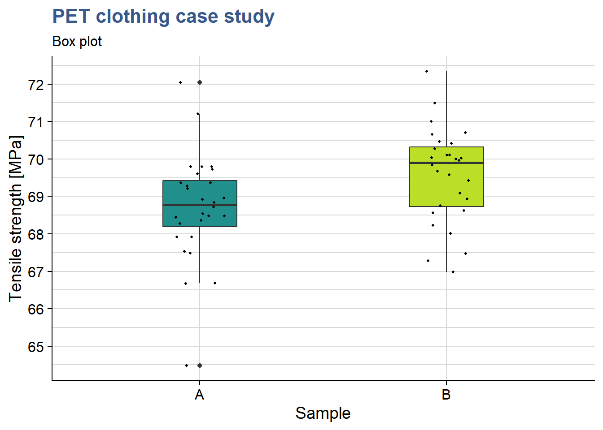
In this case she has simply added another layer to the previous plot getting both the dots and the boxes. Now she can see the median and the quantiles. The new sample has clearly higher values and she would like to confirm if the new formulation has a significant effect. While before she was comparing the sample mean with the specification, here she wants to compare the means of the two samples. A direct calculation of this difference gives:
PET_meandiff <- mean(pet_delivery$A) - mean(pet_delivery$B)
PET_meandiff[1] -0.86286To use the t.test it is important to have samples obtained independently and randomly, to check the normality of their distributions and the equality of their variances.
To do these checks our materials engineer is using the geom_qq() function from the {ggplot} package and gets directly the normality plots for both samples in the same plot:
Normality plot
pet_delivery_long %>%
ggplot(aes(sample = tensile_strength, color = sample)) +
geom_qq() +
geom_qq_line() +
coord_flip() +
scale_color_viridis_d(begin = 0.1, end = 0.7) +
labs(title = "PET clothing case study",
subtitle = "Q-Q plot",
x = "Residuals",
y = "Tensile strength [MPa]")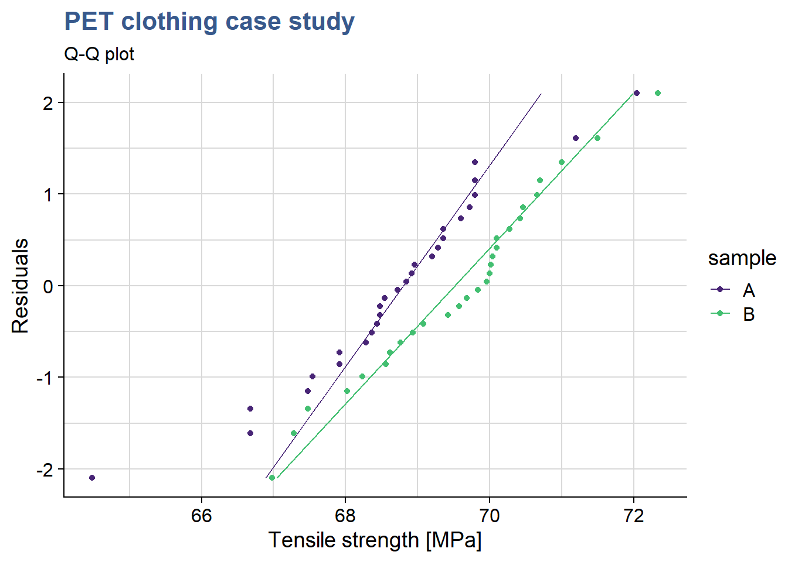
We observe that for both formulation the data is adhering to the straight line thus we consider that it follows a normal distribution. We also see that both lines in the qq plot have equivalent slopes indicating that the assumption of variances is a reasonable one. Visual observations are often better supported by tests such as the variance test.
F-test
var.test(tensile_strength ~ sample, pet_delivery_long)
F test to compare two variances
data: tensile_strength by sample
F = 1.28, num df = 27, denom df = 27, p-value = 0.53
alternative hypothesis: true ratio of variances is not equal to 1
95 percent confidence interval:
0.59026 2.75635
sample estimates:
ratio of variances
1.2755 The var.test() from the {stats} package us a simple and direct way to compare variances. The F-test is accurate only for normally distributed data. Any small deviation from normality can cause the F-test to be inaccurate, even with large samples. However, if the data conform well to the normal distribution, then the F-test is usually more powerful than Levene’s test. The test null hypothesis is that the variances are equal. Since the p value is much greater than 0.05 we cannot reject the null hypotheses meaning that we can consider them equal.
Levene test
library(car)
leveneTest(tensile_strength ~ sample, data = pet_delivery_long)Levene's Test for Homogeneity of Variance (center = median)
Df F value Pr(>F)
group 1 0.01 0.91
54 We had considered the samples to be normaly distributed but we can be more conservative and use the leveneTest() function from the {car} package. In this case we get a p > 0.05 thus again we see that there is homogeneity of the variances (they do not differ significantly). Further elaborations on the variance can be found under Minitab (2019a).
The clothing sports materials engineer has now a view on the samples distribution and homogeity of variances and can apply t.test to compare the sample means. She takes care to specify the var.equal argument as TRUE (by default it is FALSE).
t-test two samples
t.test(
tensile_strength ~ sample,
data = pet_delivery_long, var.equal = TRUE
)
Two Sample t-test
data: tensile_strength by sample
t = -2.4, df = 54, p-value = 0.02
alternative hypothesis: true difference in means between group A and group B is not equal to 0
95 percent confidence interval:
-1.58500 -0.14072
sample estimates:
mean in group A mean in group B
68.710 69.573 She sees that p < 0.05 and confirms the means differ significantly. The test output has also provided a confidence interval for the difference between the means at 95% probability and the mean difference calculated directly of -0.86286 falls inside this interval (to be noted that zero is obviously not included in this interval). Things look promising in the new recyclable PET formulation.
Statistical modeling
Case study: e-bike frame hardening
Demand for electrical bicycles grows steadily and a global manufacturer is looking into improving the quality of his bicycle frames. A test program around different treatment temperatures is established to find the conditions that optimize the fatigue resistance.

A way to go beyond the statistical description of samples and direct comparison between different tests it is to establish a model. Models help us simplify the reality and draw general conclusions. The case studies in this unit introduce linear models and their applications. They also serve as the backbone for statistical inference and forecasting. These are two important techniques because they provide mathematical evidence of such general conclusions in a context where the test quantities are strongly limited as for example in lifecycle testing of expensive mechanical parts.
Bicycle frames are submitted to many different efforts, namely bending, compression and vibration. Obviously no one expects a bike frame to break in regular usage and it is hard to commercialy claim resistance to failure as a big thing. Nevertheless on the long term a manufacturer reputation is made on performance features such as the number of cycles of effort that the frame resists. An e-bike manufacturing company is looking to increase the duration of its frames by improving the e-bike frame hardening process.
A test has been run with 5 groups of 30 bike frames submitted to 4 different treatment temperature levels and the data collected in the R tibble ebike_hardening presented below:
head(ebike_hardening) %>%
kable(align = "c")| temperature | g1 | g2 | g3 | g4 | g5 |
|---|---|---|---|---|---|
| 160 | 575000 | 542000 | 530000 | 539000 | 570000 |
| 180 | 565000 | 593000 | 590000 | 579000 | 610000 |
| 200 | 600000 | 651000 | 610000 | 637000 | 629000 |
| 220 | 725000 | 700000 | 715000 | 685000 | 710000 |
This type of two way entry is friendly for data collection but for manipulation with the {tidyverse} package functions it is often better to transform it in a long format.
ebike_narrow <- ebike_hardening %>%
pivot_longer(
cols = starts_with("g"),
names_to = "observation",
values_to = "cycles"
) %>%
group_by(temperature) %>%
mutate(cycles_mean = mean(cycles)) %>%
ungroup()
slice_head(.data = ebike_narrow, n = 5) %>%
kable(align = "c",
caption = "e-bike hardening experiment data")| temperature | observation | cycles | cycles_mean |
|---|---|---|---|
| 160 | g1 | 575000 | 551200 |
| 160 | g2 | 542000 | 551200 |
| 160 | g3 | 530000 | 551200 |
| 160 | g4 | 539000 | 551200 |
| 160 | g5 | 570000 | 551200 |
The engineering team is looking forward to see the first results which have been prepared by the laboratory supervisor. He has prepared a series of plots and data models and sent out an draft report. The first plot is a simple dot plot having the raw data and in red the group means.
ggplot(data = ebike_narrow) +
geom_point(aes(x = temperature, y = cycles)) +
geom_point(aes(x = temperature, y = cycles_mean), color = "red") +
scale_y_continuous(n.breaks = 10, labels = label_number(big.mark = "'")) +
theme(legend.position = "none") +
labs(title = "e-bike frame hardening process",
subtitle = "Raw data plot",
x = "Furnace Temperature [°C]",
y = "Cycles to failure [n]")
Clearly the highest the furnace temperature the higher the number of cycles to failure. This is absolutely expected as higher temperatures, up to a certain level, allow to release mechanical tensions and make the material less prone to fracture. The team knows that other factors are at play such as the treatment duration, the pre-heating temperature and many others related with the welding of the frame parts, but has deliberately decided to look only into the temperature due to time constraints related with a new bike launch.
It is good to complement the raw data plot with a regression line corresponding to this linear model as done in the next chunk with the function geom_smooth():
ggplot(ebike_narrow) +
geom_point(aes(x = temperature, y = cycles)) +
geom_smooth(aes(x = temperature, y = cycles), method = "lm") +
geom_point(aes(x = temperature, y = cycles_mean), color = "red") +
scale_y_continuous(n.breaks = 10, labels = label_number(big.mark = "'")) +
theme(legend.position = "none") +
labs(title = "e-bike frame hardening process",
subtitle = "Raw data plot",
x = "Furnace Temperature [°C]",
y = "Cycles to failure [n]")
This visualization shows how a linear regression line adjusts to the data and we can see it is not passing exactly at the means of each treatment level. In the next steps we go into the functions underneath that are used to calculate the regression line.
Linear models
ebike_lm <- lm(cycles ~ temperature, data = ebike_narrow)
summary(ebike_lm)
Call:
lm(formula = cycles ~ temperature, data = ebike_narrow)
Residuals:
Min 1Q Median 3Q Max
-43020 -12325 -1210 16710 33060
Coefficients:
Estimate Std. Error t value Pr(>|t|)
(Intercept) 137620 41211 3.34 0.0036 **
temperature 2527 215 11.73 7.3e-10 ***
---
Signif. codes: 0 '***' 0.001 '**' 0.01 '*' 0.05 '.' 0.1 ' ' 1
Residual standard error: 21500 on 18 degrees of freedom
Multiple R-squared: 0.884, Adjusted R-squared: 0.878
F-statistic: 138 on 1 and 18 DF, p-value: 7.26e-10This previoous code chunk from the lab supervisor draft report is a linear model built with the variable temperature as a numeric vector. The R summary() function produces a specific output for linear models and a dedicated help explaining each output value can be accessed with ?summary.lm. Knowing that R uses specific “methods” to provide the summaries for many functions is useful to find their help pages and a way to list them is apropos("summary). In this case we see a high R-squared suggesting a very good fit and that the temperature is significant by looking at the 3 significance stars next to its p-value.
Contrasts
ebike_factor <- ebike_narrow %>%
mutate(temperature = as_factor(temperature))
contrasts(ebike_factor$temperature) <- contr.treatment
attributes(ebike_factor$temperature)$levels
[1] "160" "180" "200" "220"
$class
[1] "factor"
$contrasts
2 3 4
160 0 0 0
180 1 0 0
200 0 1 0
220 0 0 1The engineering team has selected to specify and control the temperature variable at specific levels in what is called a fixed effects model, limiting the conclusions to the levels tested. The lab supervisor updates his dataset by converting the temperature variable to a factor and explicitly establishes the factor contrasts with the contrasts() function. He selects cont.treatment. Looking into the attributes of the factor we see the matrix of contrasts. In many cases it is possible to skip this step as contr.treament is default setting for the contrasts. This can be confirmed with getOption("contrasts"). He can now establish a new linear model using the modified dataset.
ebike_lm_factor <- lm(
cycles ~ temperature,
data = ebike_factor
)
summary(ebike_lm_factor)
Call:
lm(formula = cycles ~ temperature, data = ebike_factor)
Residuals:
Min 1Q Median 3Q Max
-25400 -13000 2800 13200 25600
Coefficients:
Estimate Std. Error t value Pr(>|t|)
(Intercept) 551200 8170 67.47 < 2e-16 ***
temperature2 36200 11553 3.13 0.0064 **
temperature3 74200 11553 6.42 8.4e-06 ***
temperature4 155800 11553 13.49 3.7e-10 ***
---
Signif. codes: 0 '***' 0.001 '**' 0.01 '*' 0.05 '.' 0.1 ' ' 1
Residual standard error: 18300 on 16 degrees of freedom
Multiple R-squared: 0.926, Adjusted R-squared: 0.912
F-statistic: 66.8 on 3 and 16 DF, p-value: 2.88e-09We see that from the first model to the second the R-squared has improved and that the model coefficients are slightly different. In R the model coefficients depend on the variable variable data type and on the contrasts setting. To obtain equivalent results with the different type coding it is necessary to carefully set the model contrasts. These differences are due to the calculation of different linear regression equations with different coefficients. It is important to be attemptive before using whatever output the system is giving us. We can see the coefficients and use them to calculate the output with a matrix multiplication as follows:
ebike_lm$coefficients (Intercept) temperature
137620 2527 ebike_lm$coefficients %*% c(1, 180) [,1]
[1,] 592480this shows that to calculate the output for an input of 180 we have 137’620 + 180 x 2’527 = 592’480. Making a zoom on the linear regression plot we see this passes slightly above the mean for the 180°C treatment level:
ggplot(ebike_narrow) +
geom_point(aes(x = temperature, y = cycles)) +
geom_smooth(aes(x = temperature, y = cycles), method = "lm") +
geom_point(aes(x = temperature, y = cycles_mean), color = "red") +
scale_y_continuous(n.breaks = 20, labels = label_number(big.mark = "'")) +
coord_cartesian(xlim = c(160, 180), ylim = c(520000, 620000)) +
geom_hline(yintercept = 592480) +
theme(legend.position = "none") +
labs(title = "e-bike frame hardening process",
subtitle = "Raw data plot",
x = "Furnace Temperature [°C]",
y = "Cycles to failure [n]")
On the other hand, when the temperature is coded as a factor we have the following coefficients and output calculation:
ebike_lm_factor$coefficients (Intercept) temperature2 temperature3 temperature4
551200 36200 74200 155800 ebike_lm_factor$coefficients %*% c(1, 1, 0, 0) [,1]
[1,] 587400The output is slightly different: 551’200 + 1 x 36’200 = 587’400, corresponding exactly to the treatment mean for 180°C. More on this in the next section.
Predict
A model is useful for predictions. In a random effects model where conclusions can be applied to the all the population we can predict values at any value of the input variables. In that case reusing the model with temperature as a numeric vector we could have a prediction for various temperature values such as:
ebike_new <- tibble(temperature = c(180, 200, 210))
predict(ebike_lm, newdata = ebike_new) 1 2 3
592480 643020 668290 As mentionned in our case the team has selected a fixed effects model and in principle they sould only draw conclusions at the levels at which the input was tested. We can check with predict() too that the predictions correspond exactly to the averages we’ve calculated for each level:
ebike_new <- data.frame(temperature = as_factor(c("180", "200")))
predict(ebike_lm_factor, newdata = ebike_new) 1 2
587400 625400 We find again exactly the same values calculated using the matrix multiplication of the linear regression coefficients with the input vector we used before. The predict() function has other advantages such as providing confidence intervals and taking into account the correct contrast coding, which will be explored in later case studies.
The lab supervisor is now ready to assess the validity of the model. This is required before entering the main objective which is comparing the treatment means using an anova. To do this assessment the model he is going to do a residuals analysis. R provides direct plotting functions with the base and stats packages but he opted to break down the analysis and use custom the plots. He also uses some additional statistical tests to confirm our observations from the plots. He starts by loading the package broom which will help him retrieving the data from the lm object into a data frame.
Model augment
library(broom)ebike_aug <- augment(ebike_lm_factor) %>%
mutate(index = row_number())
ebike_aug %>%
head() %>%
kable(align = "c")| cycles | temperature | .fitted | .resid | .hat | .sigma | .cooksd | .std.resid | index |
|---|---|---|---|---|---|---|---|---|
| 575000 | 160 | 551200 | 23800 | 0.2 | 17571 | 0.13261 | 1.45665 | 1 |
| 542000 | 160 | 551200 | -9200 | 0.2 | 18679 | 0.01982 | -0.56307 | 2 |
| 530000 | 160 | 551200 | -21200 | 0.2 | 17846 | 0.10522 | -1.29752 | 3 |
| 539000 | 160 | 551200 | -12200 | 0.2 | 18535 | 0.03485 | -0.74668 | 4 |
| 570000 | 160 | 551200 | 18800 | 0.2 | 18069 | 0.08275 | 1.15063 | 5 |
| 565000 | 180 | 587400 | -22400 | 0.2 | 17724 | 0.11747 | -1.37096 | 6 |
Residuals analysis plots obtained with base R plot() function. In this unit each plot is generated individually with custom functions and a direct approach with based R is used in the next units.
par(mfrow = c(2,2))
plot(ebike_lm_factor)
dev.off() null device
1 A deep structural change has happened in R since the {tidyverse}. The original S and R creators had developed a language where matrices, vectors, lists and dataframes had equivalent importance. The output of a function was often a list with a specific S3 class comprising other vectors and data.frames inside. This allowed to use in a transparent way generic functions such as summary() to produce tailor made outputs because a method was working underneath. We’ve just seen an example of this with the lm() summary in the beginning of this case. For the plot() function there are more than a hundred different automatic plots as seens with apropos("plot"). This is a very important difference as in the {tidyverse} we add layers to obtain the required plot. On the data side since {tidyverse} has been introduced we’ve seen an increasing importance of the dataframe, now replaced by the tibble. The agument() does exactly this, extracts the coefficients, residuals and other data from the model and stores it in a tibble format. This has the advantage of making it easier to integrate these functions with the other {tidyverse} functions and pipelines while still allowing to keep the methods approach. An interesting reading on this co-existance is available under tideness-modeling
Timeseries plot
ebike_aug %>%
ggplot(aes(x = index, y = .resid)) +
geom_point(shape = 21, size = 2) +
scale_y_continuous(n.breaks = 10, labels = label_number(big.mark = "'")) +
labs(
title = "e-bike frame hardening process",
subtitle = "Linear model - Residuals timeseries",
y = "Index",
x = "Fitted vaues"
)
Before drawing conclusions on the significance of the input variables it is important to assess the validity of the model. The anova assumptions are similar to the t.test assumptions discussed before. In fact the anova can be considered extension of the t.test to factors with more than 2 levels. These assumptions are the common ones commining from statistical inference principles and the central limit theorem: independent and random samples, normality of the distributions, equality of variances. These assumptions could be checked in each variable group but this would be very time consuming and not fully robust. A better way is to analyse the model residuals which are the deviations of each datapoint from the linear regression line.
A first verification consists in confirming that the residuals have no patterns. This confirms that the sampling has been done randomly and there are none of the typical bias consisting in groups of values clustered from one operator the other or from one day to the other. This can be achieved with a residuals timeseries. If patterns emerge then there may be correlation in the residuals.
For this plot we need to ensure that the order of plotting in the x axis corresponds exactly to the original data collection order. In this case the lab supervisor confirms that no specific pattern emerges from the current plot and the design presents itself well randomised.
Autocorrelation test
library(car)
durbinWatsonTest(ebike_lm_factor) lag Autocorrelation D-W Statistic p-value
1 -0.53433 2.9609 0.094
Alternative hypothesis: rho != 0As already stated visual observations can most of the times be complemented with a statistical test. In this case we can apply the durbinWatson test from the {car} package (Car stands for Companion to Applied Regression)
Although the output shows Autocorrelation of -0.53 we have to consider that the p value is slightly higher than 0.05 thus there is not enough significance to say that there is autocorrelation. The result is not a complete clear cut the lab supervisor remains alert for coming verifications.
Normality plot
ebike_aug %>%
ggplot(aes(sample = .resid)) +
geom_qq(shape = 21, size = 2) +
geom_qq_line() +
scale_y_continuous(n.breaks = 10, labels = label_number(big.mark = "'")) +
labs(
title = "e-bike frame hardening process",
subtitle = "Linear model - qq plot",
y = "Residuals",
x = "Fitted values"
)
A good next check is to verify that the residuals are normaly distributed. As the sample size is relatively small it is better to use a qq plot instead of an histogram to assess the normality of the residuals. As we see on the plot values adhere to the straight line indicating an aproximately normal distribution. In the fixed effects model we give more importance to the center of the values and here we consider acceptable that the extremes of the data tend to bend away from the straight line. This verification can be completed by a normality test.
Normality test
shapiro.test(ebike_aug$.resid)
Shapiro-Wilk normality test
data: ebike_aug$.resid
W = 0.938, p-value = 0.22For populations < 50 use the shapiro-wilk normality test, Here p > 0.05 indicates that the residuals do not differ significantly from a normally distributed population.
Residuals-Fit plot
ebike_aug %>%
ggplot(aes(x = .fitted, y = .resid)) +
geom_point(shape = 21, size = 2) +
geom_smooth(method = stats::loess, se = FALSE, color = "red") +
scale_y_continuous(n.breaks = 10, labels = label_number(big.mark = "'")) +
labs(
title = "e-bike frame hardening process",
subtitle = "Linear model - Residuals vs Fitted values",
y = "Residuals",
x = "Fitted values"
)
If the model is correct and the assumptions hold, the residuals should be structureless. In particular they should be unrelated to any other variable including the predicted response. A plot of the residuals against the fitted values should reveal such structures. In this plot we see no variance anomalies such as a higher variance for a certain factor level or other types of skweness.
Standard Residuals-Fit plot
ebike_aug %>%
ggplot(aes(x = .fitted, y = abs(.std.resid))) +
geom_point(shape = 21, size = 2) +
geom_smooth(method = stats::loess, se = FALSE, color = "red") +
labs(title = "e-bike frame hardening process",
subtitle = "Linear model - Standardised Residuals vs Fitted values",
y = "Standardised Residuals",
x = "Fitted values")
This Standardized residuals plot helps detecting outliers in the residuals (any residual > 3 standard deviations is a potential outlier). The plot shows no outliers to consider in this DOE.
Standard Residuals-Factor plot
ebike_aug %>%
ggplot(aes(x = as.numeric(temperature), y = .std.resid)) +
geom_point(shape = 21, size = 2) +
geom_smooth(method = stats::loess, se = FALSE, color = "red") +
labs(title = "e-bike frame hardening process",
subtitle = "Linear model - Standardised Residuals vs Factor levels",
y = "Standardised Residuals",
x = "Factor levels")
Besides being another support to detect outliers, this additional plot also helps seeing if the variance of the residuals is identical in this case between the factor levels.
Homocedasticity
bartlett.test(cycles ~ temperature, data = ebike_factor)
Bartlett test of homogeneity of variances
data: cycles by temperature
Bartlett's K-squared = 0.433, df = 3, p-value = 0.93A complement to the residuals-fit/residuals-factors plots is the equality of variances test. Tests for variance comparison have been introduced in the Direct Comparisons case studies but the var.test() cannot be used here. Here we have more than two levels for which the Bartlett test is most suited. The normal distribution of the residuals has already been confirmed. This test is sensitive to the normality assumption, consequently, when the validity of this assumption is doubtful, it should not be used and be replaced by the modified Levene test for example. Applying the test we obtain a p-value is P = 0.93 meaning we cannot reject the null hypothesis. In statistical terms, there is no evidence to counter the claim that all five variances are the same. This is the same conclusion reached by analyzing the plot of residuals versus fitted values.
Outliers test
outlierTest(ebike_lm_factor)No Studentized residuals with Bonferroni p < 0.05
Largest |rstudent|:
rstudent unadjusted p-value Bonferroni p
12 1.6488 0.11997 NAIn a case where we were doubtfull we could go further and make a statistical test to assess if a certain value was an outlier. Another usefull test is available in the {car} package in this case to test outliers. We get a Bonferroni adjusted p value as NA confirming that there is no outlier in the data.
Cooks distance
ebike_aug %>%
ggplot(aes(x = index, y = .cooksd)) +
geom_col(color = viridis(12)[4], fill = "grey90") +
geom_hline(yintercept = 1, color = "red") +
labs(title = "e-bike frame hardening process",
subtitle = "Residuals vs Leverage",
x = "Observation",
y = "Cooks distance")
Cooks distance is a complementary analysis to the residuals that can help identify specific data points that could have a strong influence in the model. Various cutoff points are suggested in the literature and we opted here for 1 following the short wikipedia article on the topic cooks distance
R-squared
summary(ebike_lm_factor)$r.squared[1] 0.92606A final input in the draft report of the ebike hardening linear model is the R-squared. When looking into the results the engineering team is suspicious. In this case 93% of the output is explained by input and a model with such a good fit should raise questions. Our lab supervisor is also not confortable the residuals analysis has not shown any evidence of something wrong with the model so he decides to quickly calculate it “by hand.” He knows that the R-squared, or coefficient of determination is obtained from the ratio between the residuals variance and the output variable variance showing exactly the proportion between the two and he gets its straight away from R using the data already available:
ebike_aug %>%
summarise(cycles_var = var(cycles), residuals_var = var(.resid)) %>%
mutate(Rsquared = 1 - residuals_var/cycles_var) %>% pull(Rsquared)[1] 0.92606Remembering the original linear regression plot from the beginning of the report he accepts this must not be so far away. It was clear that the temperature had a strong impact on the number of cycles and the variability for each level was small in the end. He accepts to leave as it is for now waiting for upcoming analysis of variance to see additional details.
Effects significance
The commercial introduction of the new e-bike model is approaching soon and production is expected to start in a couple of months. The engineering team is getting impacient because the parameters for the frame thermal treatment are not yet defined. The engineering head call for a second meeting to review once more the DoE outputs. The lab supervisor reopens his Rmd report tries to go beyond the linear model discussed before. He created raw data plots with dots on individual data points but now he thinks it is important to have a view on the data distribution and some summary statistics. For that he prepares a box plot:
ggplot(
ebike_factor,
aes(x = temperature, y = cycles, fill = temperature)) +
geom_boxplot() +
scale_fill_viridis_d(option = "D", begin = 0.5) +
scale_y_continuous(n.breaks = 10, labels = label_number(big.mark = "'")) +
theme(legend.position = "none") +
labs(title = "e-bike frame hardening process",
subtitle = "Raw data plot",
x = "Furnace Temperature [°C]",
y = "Cycles to failure [n]")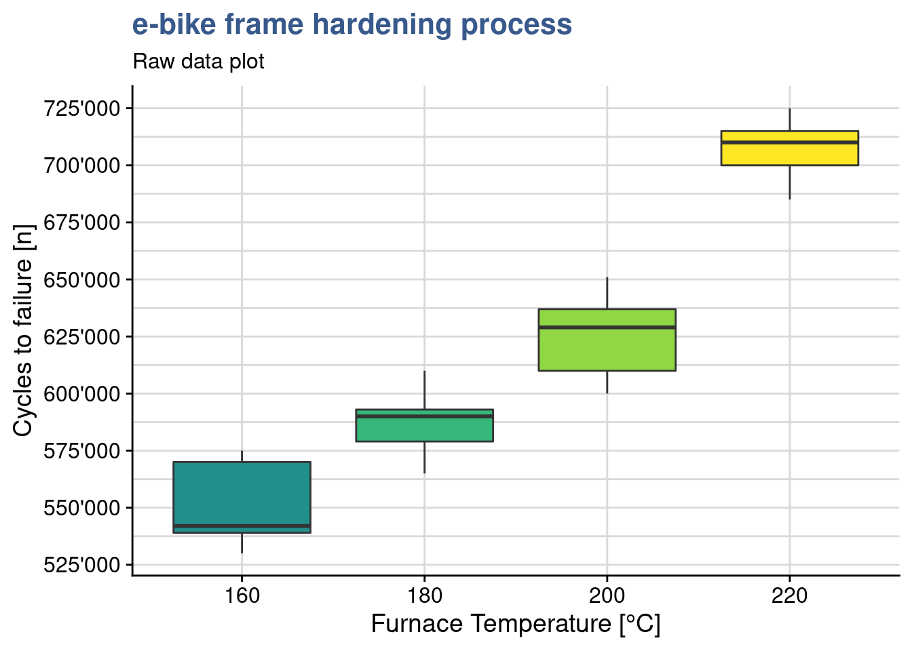
They have been doing so many experiments that sometimes it gets hard to remember which variables have been tested in which experiment. This plot reminds him that this test consisted simply on 1 input variable with severals levels - the temperature and one continuous dependent variable - the number of cycles to failure. The plots shows clearly that the distributes are quite appart from each other in spite of the slight overlap between the first three groups. The underlying question is: are the different levels of temperature explaining the different results in resistance to fatigue? to confirm that means of those groups are statistically different from each other he knows he can use the analysis of variance. The name is a bit misleading since he want to compare means…but this name is historical and comes from the way the approach has evolved. The anova as it is called is similar to the t-test but is extended. Using all pair wise t-tests would mean more effort and increase the type I error.
The anova main principle is that the the total variability in the data, as measured by the total corrected sum of squares, can be partitioned into a sum of squares of the differences between the treatment averages and the grand average plus a sum of squares of the differences of observations within treatments from the treatment average. The first time he read this explanation it seemed complex but he understood better on seeing a simple hand made example on the kahn academy - anova.
Anova
ebike_aov_factor <- aov(ebike_lm_factor)
summary(ebike_aov_factor) Df Sum Sq Mean Sq F value Pr(>F)
temperature 3 6.69e+10 2.23e+10 66.8 2.9e-09 ***
Residuals 16 5.34e+09 3.34e+08
---
Signif. codes: 0 '***' 0.001 '**' 0.01 '*' 0.05 '.' 0.1 ' ' 1In R the anova is built by passing the linear model object to the anova() or aov() functions. The output of the first is just the anova table, the output of the second function is a complete list with the full lm model inside.
The R anova output gives the Mean Square for the factor and for the residuals. In this case the between-treatment mean square is much larger than the within-treatment or residuals mean square. This suggests that it is unlikely that the treatment means are equal. The p is extremely small thus we have basis to reject the null hypothesis and conclude that the means are significantly different.
In the mean while the lab supervisor has gathered data on a similar experiment done with frams in another material for that seems to be less sensitive the the treatment temperation. He uploads this data and assigns it to a dataset called ebike_hardning2 and plots another box plot.
ebike_narrow2 <- ebike_hardening2 %>%
pivot_longer(
cols = starts_with("g"),
names_to = "observation",
values_to = "cycles"
) %>%
group_by(temperature) %>%
mutate(cycles_mean = mean(cycles)) %>%
ungroup()
ebike_factor2 <- ebike_narrow2
ebike_factor2$temperature <- as.factor(ebike_factor2$temperature)ggplot(ebike_factor2,
aes(x = temperature, y = cycles, fill = temperature)) +
geom_boxplot() +
scale_y_continuous(n.breaks = 10) +
scale_fill_viridis_d(option = "A", begin = 0.5) +
theme(legend.position = "none") +
scale_y_continuous(n.breaks = 10, labels = label_number(big.mark = "'")) +
labs(title = "e-bike frame hardening process",
subtitle = "Boxplot of frame aging resistance",
x = "Furnace Temperature [°C]",
y = "Cycles to failure [n]")
Effectively within group variation is larger and groups overlap more. A new anova gives a p value of 0.34 supporting the assumption of no significant difference between the means of the treatment levels.
ebike_lm_factor2 <- lm(cycles ~ temperature, data = ebike_factor2)
ebike_aov_factor2 <- aov(ebike_lm_factor2)
summary(ebike_aov_factor2) Df Sum Sq Mean Sq F value Pr(>F)
temperature 3 1.48e+09 4.92e+08 1.2 0.34
Residuals 16 6.55e+09 4.10e+08 Pairwise comparison
ebike_tukey <- TukeyHSD(ebike_aov_factor, ordered = TRUE)head(ebike_tukey$temperature) %>%
kable(align = "c",
caption = "tukey test on e-bike frame hardening process",
booktabs = T)| diff | lwr | upr | p adj | |
|---|---|---|---|---|
| 180-160 | 36200 | 3145.6 | 69254 | 0.02943 |
| 200-160 | 74200 | 41145.6 | 107254 | 0.00005 |
| 220-160 | 155800 | 122745.6 | 188854 | 0.00000 |
| 200-180 | 38000 | 4945.6 | 71054 | 0.02160 |
| 220-180 | 119600 | 86545.6 | 152654 | 0.00000 |
| 220-200 | 81600 | 48545.6 | 114654 | 0.00001 |
Back to the main test the lab supervisor wants to see if all levels are significantly different from each other. As discusses the anova indicates that there is a difference in the treament means but it won’t indicate which ones and doing individual t.tests has already been discarded. It is possible to get a direct one to one comparison of means with TukeyHSD() from {stats}. The test also provides a confidence interval for each difference. Most importantly it provides us with the p value to help us confirm the significance of the difference and conclude factor level by factor level which differences are significant. Additionally we can alo obtain the related plot with the confidence intervals
plot(ebike_tukey)
In the case of the frames thermal treatment all levels bring a specific impact on the lifecycle as we can see from the p values all below 0.05 and from the fact that no confidence interval crosses zero (there are no differences that could have a chance of being zero).
Least significant difference
library(agricolae)ebike_LSD <- LSD.test(
y = ebike_lm_factor,
trt = "temperature"
)A useful complement to Tukey’s test is the calculation of Fisher’s Least Significant differences. The Fisher procedure can be done in R with the LSD.test() from the {agricolae} package. The first important ouput is precisely the least significant difference which is the smallest the difference between means (of the the life cycles) that can be considered significant. This is indicated in the table below with the value LSD = 24’492.
head(ebike_LSD$statistics) %>%
kable(align = "c",
caption = "Fisher LSD procedure on e-bike frame hardening: stats",
booktabs = T)| MSerror | Df | Mean | CV | t.value | LSD | |
|---|---|---|---|---|---|---|
| 333700000 | 16 | 617750 | 2.9571 | 2.1199 | 24492 |
Furthermore it gives us a confidence intervals for each treatment level mean:
head(ebike_LSD$means) %>%
select(-Q25, -Q50, -Q75) %>%
kable(align = "c",
caption = "Fisher LSD procedure on e-bike frame hardening: means",
booktabs = T)| cycles | std | r | LCL | UCL | Min | Max | |
|---|---|---|---|---|---|---|---|
| 160 | 551200 | 20017 | 5 | 533882 | 568518 | 530000 | 575000 |
| 180 | 587400 | 16742 | 5 | 570082 | 604718 | 565000 | 610000 |
| 200 | 625400 | 20526 | 5 | 608082 | 642718 | 600000 | 651000 |
| 220 | 707000 | 15248 | 5 | 689682 | 724318 | 685000 | 725000 |
We can see for example that for temperature 180 °C the lifecyle has an average of 587’400 (has he had calculated before) with a probability of 95% of being between 570’082 and and 604’718 cycles. Another useful outcome is the creation of groups of significance.
head(ebike_LSD$groups) %>%
kable(align = "c",
caption = "Fisher LSD procedure on e-bike frame hardening: groups",
booktabs = T)| cycles | groups | |
|---|---|---|
| 220 | 707000 | a |
| 200 | 625400 | b |
| 180 | 587400 | c |
| 160 | 551200 | d |
In this case as all level means are statistically different they all show up in separate groups, each indicated by a specific letter. Finally we can use plot() which calls the method plot.group() from the same package. This allows us to provide as input the desired argument for the error bars.
plot(
ebike_LSD,
variation = "SE",
main = "e-bike hardening\nMeans comparison"
)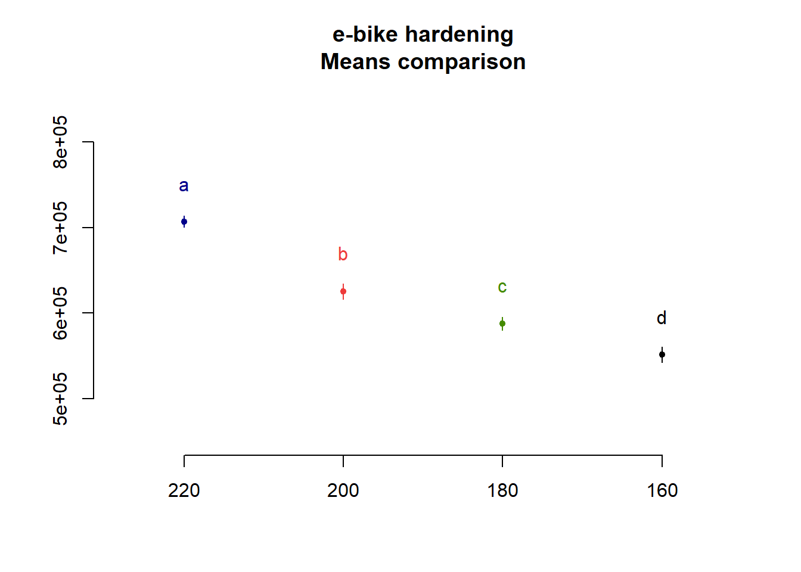
Strangly the package plot doesn’t have the option to plot error bars with LSD and the lab supervisor decides to make a custom plot:
ebike_factor %>%
group_by(temperature) %>%
summarise(cycles_mean = mean(cycles),
cycles_lsd = ebike_LSD$statistics$LSD) %>%
ggplot(aes(x = temperature, y = cycles_mean, color = temperature)) +
geom_point(size = 2) +
geom_line() +
geom_errorbar(aes(ymin = cycles_mean - cycles_lsd,
ymax = cycles_mean + cycles_lsd),
width = .1) +
scale_y_continuous(n.breaks = 10, labels = label_number(big.mark = "'")) +
scale_color_viridis_d(option = "C", begin = 0.1, end = 0.8) +
annotate(geom = "text", x = Inf, y = -Inf, label = "Error bars are +/- 1xSD",
hjust = 1, vjust = -1, colour = "grey30", size = 3,
fontface = "italic") +
labs(title = "e-bike frame hardening process",
subtitle = "Boxplot of frame aging resistance",
x = "Furnace Temperature [°C]",
y = "Cycles to failure [n]")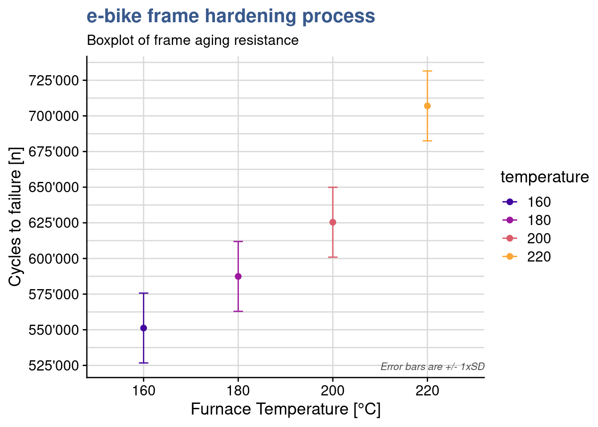
The plot shows some overlap between the levels of 160 and 180 and again between 180 and 200. When looking a the Tukey test outcome we see that the p value of these differences is close to 0.05. Presenting all these statistical findings to the team they end up agreeing that in order to really improve the resistance they should consider a jump from 160 to 200°C in the thermal treatment.
As often with statistical tools, there is debate on the best approach to use. We recommend to combine the Tukey test with the Fisher’s LSD. The Tukey test giving a first indication of the levels that have an effect and calculating the means differences and the Fisher function to provide much more additional information on each level. To be considered in each situation the slight difference between the significance level for difference between means and to decide if required to take the most conservative one.
To go further in the Anova F-test we recommend this interesting article from Minitab (2016).
Interactions
Case study: solarcell output test

The countdown to leave fossil fuel has started as many companies have adopted firm timelines for 100% renewable energy sourcing. Solar energy is a great candidate but solar cell efficiency is a great challenge. Although it has been progressing steadily since more than four decades yields can still be considered low. A global manufacturing company of solar cells is looking to push the boundaries with a new generation of materials and grab another pie of the global market.
Model formulae
solarcell_formula <- formula(
output ~ temperature * material
) In previous case studies input factors has been put directly in the arguments of the lm() function by using the inputs and outputs and relating them with the tilde ~ sign. The cases were simple with only one factor but in most DoEs we want to have many factors and decide which interactions to keep or drop. Here we’re looking a bit more into detail in how to express this. When we pass an expression to the formula() function we generate an object of class formula and at that time some calculations are done in background to prepare the factors for the linear model calculation. Looking at the formula class and attributes we have:
class(solarcell_formula)[1] "formula"attributes(terms(solarcell_formula))$factors temperature material temperature:material
output 0 0 0
temperature 1 0 1
material 0 1 1We can see that the expression has been extended. Although we have only given as input the product of the factors we can see that an interaction term temperature:material has been generated. We also see the contrasts matrix associated. There is a specific syntax to specify the formula terms using *,+ and other symbols. As always it is good to consult the function documentation with ?formula.
In the solar cell manufacturing company mentioned before the R&D team is working a new research project with the objective of understanding the output in [kWh/yr equivalent] of a new solar cell material at different ambient temperatures. Their latest experiment is recorded in an R dataset with the name solarcell_output:
solarcell_output %>%
head(5) %>%
kable(align = "c")| material | run | T-10 | T20 | T50 |
|---|---|---|---|---|
| thinfilm | 1 | 130 | 34 | 20 |
| thinfilm | 2 | 74 | 80 | 82 |
| thinfilm | 3 | 155 | 40 | 70 |
| thinfilm | 4 | 180 | 75 | 58 |
| christaline | 1 | 150 | 136 | 25 |
As often this data comes in a wide format and the first step we’re doing is to convert it into a long format and to convert the variables to factors.
solarcell_factor <- solarcell_output %>%
pivot_longer(
cols = c("T-10", "T20", "T50"),
names_to = "temperature",
values_to = "output"
) %>% mutate(across(c(material, temperature), as_factor))The experiment has consisted in measuring the output at three different temperature levels on three different materials. The associated linear model can be obtained with:
solarcell_factor_lm <- lm(
formula = solarcell_formula,
data = solarcell_factor
)
summary(solarcell_factor_lm)
Call:
lm(formula = solarcell_formula, data = solarcell_factor)
Residuals:
Min 1Q Median 3Q Max
-60.75 -14.63 1.38 17.94 45.25
Coefficients:
Estimate Std. Error t value Pr(>|t|)
(Intercept) 134.75 12.99 10.37 6.5e-11 ***
temperatureT20 -77.50 18.37 -4.22 0.00025 ***
temperatureT50 -77.25 18.37 -4.20 0.00026 ***
materialchristaline 21.00 18.37 1.14 0.26311
materialmultijunction 9.25 18.37 0.50 0.61875
temperatureT20:materialchristaline 41.50 25.98 1.60 0.12189
temperatureT50:materialchristaline -29.00 25.98 -1.12 0.27424
temperatureT20:materialmultijunction 79.25 25.98 3.05 0.00508 **
temperatureT50:materialmultijunction 18.75 25.98 0.72 0.47676
---
Signif. codes: 0 '***' 0.001 '**' 0.01 '*' 0.05 '.' 0.1 ' ' 1
Residual standard error: 26 on 27 degrees of freedom
Multiple R-squared: 0.765, Adjusted R-squared: 0.696
F-statistic: 11 on 8 and 27 DF, p-value: 9.43e-07We’re going to go more in details now to validate the model and understand the effects and interactions of the different factors.
Residuals standard error
pluck(summary(solarcell_factor_lm), "sigma")[1] 25.985Besides the R-squared discussed previously in the linear models unit there is another useful indicator of the quality of the fit which is the Residuals Standard Error RSE. It provides the magnitude of a typical residuals. This value is also given directly as output of the model summary and is 26 in this case. Like the R-squared is better when we know how it is calculated and once we’re at ease with manipulating the model data either with {stats} or {broom} it is possible to with a few steps check see how this is done.
sqrt(sum(solarcell_factor_lm$residuals ^ 2) / df.residual(solarcell_factor_lm))[1] 25.985The exact value is 25.985 confirming the value extracted from the summary with the pluck() function from {purrr}.
Residuals summary
par(mfrow = c(2,3))
plot(solarcell_factor_lm$residuals)
plot(solarcell_factor_lm, which = 2)
plot(solarcell_factor_lm, which = c(1, 3, 5))
plot(solarcell_factor_lm, which = 4)
dev.off() null device
1 As the residuals analysis has been discussed in detail including custom made plots and statistical tests in the linear models unit, the assessment is done here in a summarized manner with a grouped output of all residuals plots. The qq plot presents good adherence to the center line indicating a normal distribution; the residuals versus fit presents a rather symmetrical distribution around zero indicating equality of variances at all levels and; the scale location plot though, shows a center line that is not horizontal which suggests the presence of outliers; in the Residuals versus fit we can effectively sense the Residuals Standard Error of 26.
Interaction plot
interaction.plot(
type = "b",
col = viridis(12)[4],
x.factor = solarcell_factor$temperature,
trace.factor = solarcell_factor$material,
fun = mean,
response = solarcell_factor$output,
trace.label = "Material",
legend = TRUE,
main = "Temperature-Material interaction plot",
xlab = "temperature [°C]",
ylab = "output [kWh/yr equivalent]"
)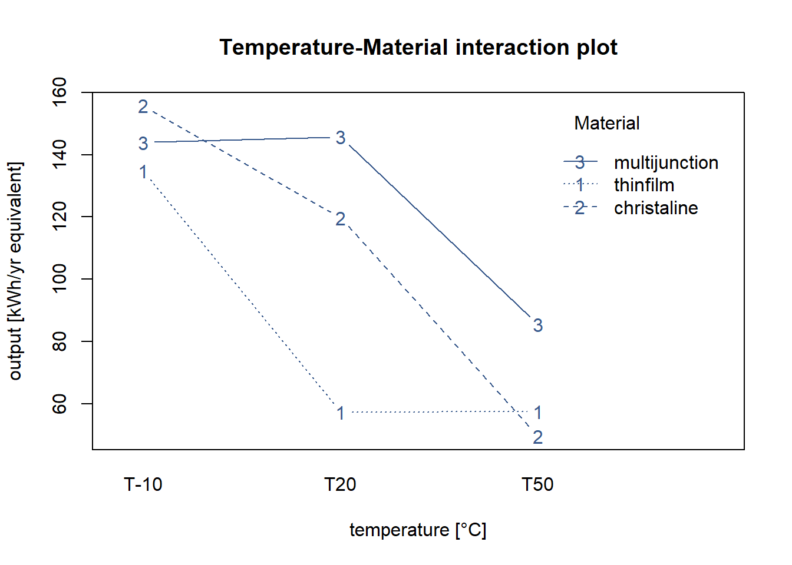
In order to understand the behavior of the solar cell materials in the different temperature conditions the R&D team is looking for a plot that presents both factors simultaneous. Many different approaches are possible in R and here the team has selected the most basic one, the interactionplot() from the {stats} package.
Although simple several findings can already be extracted from this plot. They get the indication of the mean value of the solar cell output for the different materials at each temperature level. Also we see immediately that batteries tend to last longer at lower temperatures and this for all material types. We also see that there is certainly an interaction between material and temperature as the lines cross each other.
Anova with interactions
anova(solarcell_factor_lm)Analysis of Variance Table
Response: output
Df Sum Sq Mean Sq F value Pr(>F)
temperature 2 39119 19559 28.97 1.9e-07 ***
material 2 10684 5342 7.91 0.002 **
temperature:material 4 9614 2403 3.56 0.019 *
Residuals 27 18231 675
---
Signif. codes: 0 '***' 0.001 '**' 0.01 '*' 0.05 '.' 0.1 ' ' 1Continuing the analysis started in the interaction plot the R&D team checks the anova output. Like in the lm summary output, the stars in front of the p value of the different factors indicate that the effects are statistically different. Three stars for temperature corresponding to an extremely low p value indicating that the means of the output at the different levels of temperature are different. This confirms that temperature has an effect on output power. The material effect has a lower significance but is also clearly impacting cell power output. Finally it is confirmed that there is an interaction between temperature and material as the temperature:material term has a p value of 0.019 which is lower than the typical threshold of 0.05. Looking into the details interaction comes from the fact that increasing temperature from 10 to 20 decreases output for the thinfilm but is not yet impacting the output for multijunction film. For multijunction it is needed to increase even further the temperature to 50°C to see the decrease in the output.
Before closing the first DOE analysis meeting the R&D team discusses what would have been take-aways if the interaction had not put in the model. As they use more and more R during their meetings and do the data analysis on the sport they simply create another model without the temperature:material term in the formula:
solarcell_factor_lm_no_int <- lm(
output ~ temperature + material,
data = solarcell_factor)
summary(solarcell_factor_lm_no_int)
Call:
lm(formula = output ~ temperature + material, data = solarcell_factor)
Residuals:
Min 1Q Median 3Q Max
-54.39 -21.68 2.69 17.22 57.53
Coefficients:
Estimate Std. Error t value Pr(>|t|)
(Intercept) 122.5 11.2 10.97 3.4e-12 ***
temperatureT20 -37.2 12.2 -3.04 0.0047 **
temperatureT50 -80.7 12.2 -6.59 2.3e-07 ***
materialchristaline 25.2 12.2 2.06 0.0482 *
materialmultijunction 41.9 12.2 3.43 0.0017 **
---
Signif. codes: 0 '***' 0.001 '**' 0.01 '*' 0.05 '.' 0.1 ' ' 1
Residual standard error: 30 on 31 degrees of freedom
Multiple R-squared: 0.641, Adjusted R-squared: 0.595
F-statistic: 13.9 on 4 and 31 DF, p-value: 1.37e-06Residual standard error is up from 26 to 30 which shows a poorer fit but R-square is only down from 76.5% to 64.1% which is still reasonably high. They apply the anova on this new model:
anova(solarcell_factor_lm_no_int)Analysis of Variance Table
Response: output
Df Sum Sq Mean Sq F value Pr(>F)
temperature 2 39119 19559 21.78 1.2e-06 ***
material 2 10684 5342 5.95 0.0065 **
Residuals 31 27845 898
---
Signif. codes: 0 '***' 0.001 '**' 0.01 '*' 0.05 '.' 0.1 ' ' 1The output still confirms the significance of the effects of the factors but the residuals analysis raises other concerns:
par(mfrow = c(2,3))
plot(solarcell_factor_lm_no_int$residuals)
plot(solarcell_factor_lm_no_int, which = 2)
plot(solarcell_factor_lm_no_int, which = c(1, 3, 5))
plot(solarcell_factor_lm_no_int, which = 4)
dev.off()null device
1 They see in the Residuals vs Fitted a clear pattern with residuals moving from positive to negative and then again to positive along the fitted values axis which indicates that there is an interaction at play. Another concern comes from the Residuals versus Factor levels where at 10°C some residuals go beyond 2 standard deviations. The model with the interaction is clearly preferred in this case.
Covariance
solarcell_fill %>%
head(5) %>%
kable()| material | output | fillfactor |
|---|---|---|
| multijunction_A | 108 | 20 |
| multijunction_A | 123 | 25 |
| multijunction_A | 117 | 24 |
| multijunction_A | 126 | 25 |
| multijunction_A | 147 | 32 |
Solarcell experiments continue as the R&D project on new materials progresses. Any increase in the output, which is measured in [kWh/yr equivalent will bring a competitive advantage to the company. The previous meeting outcome made the R&D team select the multijunction material as the best candidate for the next round of tests. A new experiment has been designed but the team needs to go deeper in the understanding on how to improve the power output. Besides temperature and material there seems to be another variable at play: the fill factor. This seems to be a complex technical topic but all experts agree that this is influencing the behavior of the cell. The fill factor depends on the electrical circuit configuration and the output seems to be correlated with it. Until now the team has not been able to control the fill factor. The table just presented shows the value of fill factor collected for each cell tested together with the measured output.
A Data Scientist from the center recommends to use an analysis of covariance (ancova) which can be useful in situations where a continuous variable may be influencing the measured value. He calls this a covariate. In such specific case this approach provides better results than the analysis of variance (anova) allowing for a more accurate assessment of the effects of the categorical variable. In this case it can remove the effect of the fill factor in the output when we want to compare the different materials. It is nevetheless important to ensure the basic assumption that the continuous variable is independent from the factor to be analyses, in this case that the material is not influencing the fill factor. A good explanation and a similar case (without R) can be seen on page 655 of Montgomery (2012).
solarcell_fill %>%
ggplot(aes(x = fillfactor, y = output)) +
geom_point() +
geom_smooth(method = "lm", se = FALSE) +
theme_industRial() +
labs(
title = "The solarcell output test",
subtitle = "Output vs Fill Factor",
x = "Fill factor [%]",
y = "Output"
)
Correlation test
cor.test(
solarcell_fill$output, solarcell_fill$fillfactor,
method = "pearson"
)
Pearson's product-moment correlation
data: solarcell_fill$output and solarcell_fill$fillfactor
t = 9.8, df = 13, p-value = 2.3e-07
alternative hypothesis: true correlation is not equal to 0
95 percent confidence interval:
0.82100 0.97976
sample estimates:
cor
0.93854 The next step is to confirm the correlation between the continuous input variable and the output and the cor.test() from the {stats} package is perfectly suited for this. The extremely high value of 93% confirms what was very visible in the scatterplot. Going further and using the approach from (Broc 2016) we’re going to facet the scatterplots to assess if the coefficient of the linear regression is similar for all the levels of the fillfactor:
solarcell_fill %>%
ggplot(aes(x = fillfactor, y = output)) +
geom_point() +
geom_smooth(method = "lm", se = FALSE) +
facet_wrap(vars(material)) +
theme_industRial() +
labs(
title = "The solarcell output test",
subtitle = "Output vs Fill Factor, by material type",
x = "Fill factor [%]",
y = "Output"
)
The linear regression plots split by material show that from one material to the other the relationship between output and fillfactor is equivalent. Not only increasing fill factor increase output the degree to which this takes place is similar as we can see by the slopes of the plot. Care needs to be taken because the number of points is very small. If required it is always possible to do individual correlation test and/or do a statistical test between slopes. Now things are ready to the ancova itself.
Ancova
solarcell_ancova <- aov(
formula = output ~ fillfactor + material,
data = solarcell_fill
)
solarcell_aov <- aov(
output ~ material,
data = solarcell_fill
)Although the team had been using R often the case of the ancova had not yet came up so it was up to the Data Scientist to do this analysis. In R the ancova can be done with the same function as the anova, the aov() function from {stats} but there’s a specific way to establish the formula which he has obtained from Datanovia - Ancova: the covariate is the first input and there must be interaction between the two inputs, thus the plus sign only. As with contrasts, any little mistake in the syntax may produce very different results so it requires great care and often confirmation of calculation with an existing well know case.
summary(solarcell_ancova) Df Sum Sq Mean Sq F value Pr(>F)
fillfactor 1 2746 2746 119.93 3e-07 ***
material 2 120 60 2.61 0.12
Residuals 11 252 23
---
Signif. codes: 0 '***' 0.001 '**' 0.01 '*' 0.05 '.' 0.1 ' ' 1summary(solarcell_aov) Df Sum Sq Mean Sq F value Pr(>F)
material 2 1264 632 4.09 0.044 *
Residuals 12 1854 155
---
Signif. codes: 0 '***' 0.001 '**' 0.01 '*' 0.05 '.' 0.1 ' ' 1The aov() summary output looks exactly the same for both analysis but the in the first output corresponding to the ancova the material mean square has been adjusted for regression and is smaller. It is also noticeable that the residuals are smaller in the ancova which confirm that the approach has helped reducing the error variability.
Finaly the most important observation is that the conclusions would have been just the opposite if the Data Scientist had not recommended the ancova. In fact in the anova would have shown that the material influences the output while when removing the influence of the fill factor the ancova ends up showing that there is no influence. This is visible in the p value which is above 0.05 in the ancova and below 0.05 in the anova.
As next steps the R&D team decides to tackle this fill factor issue and get it into control. Reducing fill factor variability within each material will certainly reduce the variability in the power output. I would also make upcoming experiments simpler and more easily comparable.
General designs
General factorial designs require teams to put together a wealth of knowledge of which some has been already applied in previous case studies or is referred in the bibliography and glossary. This comprises things like root cause analysis, linear models and analysis of variance all coherently articulated in a well though project with clear objectives. The building blocks discussed so far relate to a limited number of input factors and levels and exclusively a single output variable. Model validation and interactions are needed tools in all cases and once these are all mastered it becomes possible to consider situations with many variables, many outputs and higher level interactions. These arrangements become extremely powerful and allow to handle complex real life situations such as the design of a new system with dozens of features that relate with each other or the optimization of a manufacturing process where the amount of data generated is very large but the testing time and cost are very high. At this moment considerations of trial quantities optimization enter at play.
In our case studies a run represents a unique combination of the factors and a replicate an independent repetition of a run. This leads to the notion of trials corresponding to the multiplication of the number of runs by the number of replicates. For small designs it is possible to calculate the number of trials by simply multiplying the number of levels of each factor. If we have for instance 1 factor with 3 levels and 2 factors with 4 levels then we have \(3 \times 4 \times 4 = 48\) runs which corresponds to the number of distinct combinations. Then we have to multiply by the number of replicates per run to get the number of trials, e.g \(48 \times 3 = 144\) trials.
For a very high number of factors and levels where this way of calculating may not be practical the total number of trials is given by \(l^k\) where \(l\) is the number of levels and \(k\) the number of input factors. With this approach a design with 4 factors of 2 levels gives \(2^4 = 2 \times 2 \times 2 \times 2 = 16\) runs and if each has 5 replicates there are \(16 \times 5 = 80\) trials to be executed. If more factors with a different number of levels are added, the total number of trials is calculated by multiplying both groups: \(l_{1}^{k_{1}}\) \(\times\) \(l_{2}^{k_{2}}\). Continuing the previous example, if 3 additional factors with 4 levels each were added, all with 5 replicates, the total number of trials would be expressed as follows: \(2^{4} \times 4^{3} \times 5 = 5120\) trials, which is a very high number in most industrial cases and would require optimization techniques which will be discussed in later units.
Factorial design
Case study: juice bottling plant
In a juice producing plant a new fast dry matter content measurement device from the supplier DRX has been recently put in operation but the Quality Assurance Head has raised concerns on a bias with the reference method. The quality team established DoE to assess several potential causes such as the dry matter content and juice residue particle size.
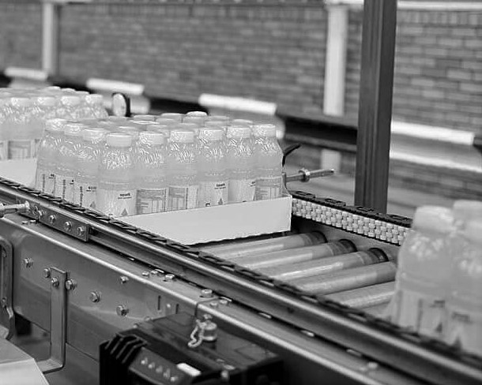
library(DoE.base)juice_doe <- fac.design(
randomize = FALSE,
factor.names = list(
product = c("beetroot", "apple", "carrot"),
drymatter_target = c(10, 15, 20),
part = c(1, 2, 3),
speed = c(20, 25),
particle_size = c(250, 300))
)Although the Calibration essay discussed in the MSA unit has shown a bias during the acceptance phase the Factory Management has opted to put it in production. The reduction in measurement time is significant and Supply Chain is putting pressure to increase volumes in a context where on-line sales rocket sky high. The Quality Manager understands all this but he’s concern of having some kind of kickback. Although he’s not expecting any kind of consumer complain, dry matter levels are somehow loosely related with some sort claims and regulatory limits.
To dig deeper and understand how to minimize this bias he has asked one of his team members to come up with an experiment design. He would like something that combines all factors mentionned by the team as potential root causes for the bias. After a short brainstorming between the production and quality teams several potential causes for bias were: drymatter level, the speed of filling and the powder particle size. This lead to a mid size experiment design with three products, three levels of drymatter, two line speed levels and two particle size levels.
When the number of factors and levels is limited it is possible to reccur to existing experiment designs and pre-filled Yates tables. In this case the quality analyst had been trying with R and found a package called {DoE.base} which generates such designs automatically with the function fac.desig. The output generated by this function is more than just a tibble, it belongs to a specific class called designand has other attributes just like an lm or aov S3 objects. The care given by the package authors becomes visible when using an R generic function such as summary() with such object and get as return a tailor made output, in this case showing the levels of the different factors of our design:
class(juice_doe)[1] "design" "data.frame"summary(juice_doe)Call:
fac.design(randomize = FALSE, factor.names = list(product = c("beetroot",
"apple", "carrot"), drymatter_target = c(10, 15, 20), part = c(1,
2, 3), speed = c(20, 25), particle_size = c(250, 300)))
Experimental design of type full factorial
108 runs
Factor settings (scale ends):
product drymatter_target part speed particle_size
1 beetroot 10 1 20 250
2 apple 15 2 25 300
3 carrot 20 3 In the summary() output we can see the plan factors with 3 products, 3 levels of dry matter target, 2 levels for speed and 2 levels for particle size. Using this the team has simple copied the experiment plan to an spreadsheet to collect the data:
juice_doe %>%
write_clip() and after a few days the file completed with the test results cames back ready for analysis
juice_drymatter %>%
head() %>%
kable()| product | drymatter_TGT | speed | particle_size | part | drymatter_DRX | drymatter_REF |
|---|---|---|---|---|---|---|
| apple | 10 | 20 | 250 | 1 | 9.80 | 10.05 |
| apple | 10 | 20 | 250 | 2 | 9.82 | 10.05 |
| apple | 10 | 20 | 250 | 3 | 9.82 | 10.05 |
| beetroot | 10 | 20 | 250 | 1 | 9.79 | 10.03 |
| beetroot | 10 | 20 | 250 | 2 | 9.75 | 10.03 |
| beetroot | 10 | 20 | 250 | 3 | 9.77 | 10.03 |
and the only thing quality analyst had to add was an extra column to calculate the bias:
juice_drymatter <- juice_drymatter %>%
mutate(bias = drymatter_DRX - drymatter_REF)Main effects plots
Figure 1: Main
drymatter_TGT_plot <- juice_drymatter %>%
group_by(drymatter_TGT) %>%
summarise(bias_m_drymatter = mean(bias)) %>%
ggplot(aes(x = drymatter_TGT, y = bias_m_drymatter)) +
geom_point() +
geom_line() +
coord_cartesian(
xlim = c(9,21),
ylim = c(-1,0), expand = TRUE) +
labs(
title = "Juice bottling problem",
subtitle = "Main effects plots",
x = "Drymatter TGT [%]",
y = "Average bias [g]"
)As the number of factors and levels of a design increase, more thinking is required to obtain good visualisation of the data. Main effects plots consist usually of a scatterplot representing the experiment output as a function of one of the inputs. This first plot consists of the mean bias as a function of the dry matter for each of the 3 levels tested. As the DOE has 3 factors, three plots like this are required in total. The Quality Analyst builds the remaining two plots and then groups them all together in a single output with the package {patchwork}. This is made by simply putting + between the plots.
particle_size_plot <- juice_drymatter %>%
group_by(particle_size) %>%
summarise(particle_size_bias_mean = mean(bias)) %>%
ggplot(aes(x = particle_size, y = particle_size_bias_mean)) +
geom_point() +
geom_line() +
coord_cartesian(
xlim = c(240,310),
ylim = c(-1,0), expand = TRUE) +
labs(
x = "Particle Size",
y = "Average bias [g]"
)
speed_plot <- juice_drymatter %>%
group_by(speed) %>%
summarise(speed_bias_mean = mean(bias)) %>%
ggplot(aes(x = speed, y = speed_bias_mean)) +
geom_point() +
geom_line() +
coord_cartesian(
xlim = c(19, 26),
ylim = c(-1,0), expand = TRUE) +
labs(
x = "Speed",
y = "Average bias [g]"
)
drymatter_TGT_plot + particle_size_plot + speed_plot
Main effects plots give important insights in to the experiement outcomes and this even before any statistical analysis with a linear model and anova. From these three plots the Quality Analyst already takes the following observations for her report:
- bias increases in negative direction as dry matter content increases
- bias increases in positive direction as particle size increases
- bias is not influence by line speed
Interaction plots (custom)
drymatter_TGT_particle_size_plot <- juice_drymatter %>%
mutate(particle_size = as_factor(particle_size)) %>%
group_by(drymatter_TGT, particle_size) %>%
summarise(drymatter_bias_mean = mean(bias), drymatter_bias_sd = sd(bias)) %>%
ggplot(aes(x = drymatter_TGT, y = drymatter_bias_mean, color = particle_size, linetype = particle_size)) +
geom_point(aes(group = particle_size), size = 2) +
geom_line(aes(group = particle_size, linetype = particle_size)) +
scale_linetype(guide=FALSE) +
geom_errorbar(aes(
ymin = drymatter_bias_mean - 2 * drymatter_bias_sd,
ymax = drymatter_bias_mean + 2 * drymatter_bias_sd,
width = .5
)) +
scale_color_viridis_d(option = "C", begin = 0.3, end = 0.7, name = "Particle size") +
coord_cartesian(
xlim = c(9,21),
ylim = c(-1,0), expand = TRUE) +
annotate(geom = "text", x = Inf, y = 0, label = "Error bars are +/- 2xSD",
hjust = 1, vjust = -1, colour = "grey30", size = 3,
fontface = "italic") +
labs(
title = "Juice bottling problem",
subtitle = "Interaction plots",
x = "Drymatter target",
y = "Average bias deviation [g]"
) +
theme(legend.justification=c(1,0), legend.position=c(1,0))Now to look deeper and she’s preparing interaction plots. She wants to understand if factors combine in unexpected ways at certain levels. In designs like these with 3 factors we have 3 possible interactions (A-B, A-C, B-C) corresponding the the possible combination between them. It is important to keep in mind that at least two replicates by run are needed to be able determine the sum of squares due to error, this if all possible interactions are to be included in the model. As the plan is a full factorial plan and there are more than 2 replicates, all factor combinations are resolved and can be assessed for their significance. The interaction plots show precisely such combinations, two at a time against the output. The first one Dry matter target - Particle Size being ready she moves to the next two: Dry matter target - Speed and Speed - Particle Size.
drymatter_TGT_speed_plot <- juice_drymatter %>%
mutate(speed = as_factor(speed)) %>%
group_by(drymatter_TGT, speed) %>%
summarise(drymatter_bias_mean = mean(bias), drymatter_bias_sd = sd(bias)) %>%
ggplot(aes(x = drymatter_TGT, y = drymatter_bias_mean, color = speed)) +
geom_point(aes(group = speed), size = 2) +
geom_line(aes(group = speed, linetype = speed)) +
scale_linetype( guide=FALSE) +
scale_color_viridis_d(option = "C", begin = 0.3, end = 0.7, name = "Speed") +
geom_errorbar(aes(
ymin = drymatter_bias_mean - 2 * drymatter_bias_sd,
ymax = drymatter_bias_mean + 2 * drymatter_bias_sd,
width = .5
)) +
coord_cartesian(
xlim = c(9, 21),
ylim = c(-1,0), expand = TRUE) +
annotate(geom = "text", x = Inf, y = 0, label = "Error bars are +/- 2xSD",
hjust = 1, vjust = -1, colour = "grey30", size = 3,
fontface = "italic") +
labs(
x = "Dry matter target",
y = "Average bias deviation [g]"
) +
theme(legend.justification=c(1,0), legend.position=c(1,0))
speed_particle_size_plot <- juice_drymatter %>%
mutate(particle_size = as_factor(particle_size)) %>%
group_by(speed, particle_size) %>%
summarise(drymatter_bias_mean = mean(bias), drymatter_bias_sd = sd(bias)) %>%
ggplot(aes(x = speed, y = drymatter_bias_mean, color = particle_size)) +
geom_point(aes(group = particle_size), size = 2) +
geom_line(aes(group = particle_size, linetype = particle_size)) +
scale_linetype(guide=FALSE) +
scale_color_viridis_d(option = "C", begin = 0.3, end = 0.7, name = "Particle size") +
geom_errorbar(aes(
ymin = drymatter_bias_mean - 2 * drymatter_bias_sd,
ymax = drymatter_bias_mean + 2 * drymatter_bias_sd,
width = .5
)) +
coord_cartesian(
xlim = c(19, 26),
ylim = c(-1,0), expand = TRUE) +
annotate(geom = "text", x = Inf, y = 0, label = "Error bars are +/- 2xSD",
hjust = 1, vjust = -1, colour = "grey30", size = 3,
fontface = "italic") +
labs(
x = "Speed",
y = "Average bias deviation [g]"
) +
theme(legend.justification=c(1,0), legend.position=c(1,0))
drymatter_TGT_particle_size_plot + drymatter_TGT_speed_plot + speed_particle_size_plot
The approach here goes much beyond the interaction.plot function from the {stats} package introduced before and the code to obtain this plots is significantly longer. She has chosen to develop here the plots with {ggplot2} because she wanted to have direct access to all the minor details in the contruction of the plot such as the colors by line, a custom error bars calculation, very specific locations for the legends. She ends up concluding that there is no interaction between any of the different factors as all lines do not intercept, are mostly parallel and error bars cover each other.
Formula expansion
f1 <- Y ~ A * B * C
f2 <- Y ~ A * B + Cexpand_formula(f1)[1] "A" "B" "C" "A:B" "A:C" "B:C" "A:B:C"expand_formula(f2)[1] "A" "B" "C" "A:B"The short code chunk before shows two formula expansion examples, the first one corresponding to our Juice DOE: in a design with factors coded A, B and C the sources of variation for the Anova table for three-factor fixed effects model are: A, B, C, AB, AC, BC, ABC. The second case corresponds to a situation where interactions with C would be discarded. Understanding these syntax details is very important because as more and more factors are added to models, the number of trials grows to unrealistic quantities. In such situations a preliminary work consisting in the selection of specific interactions enables the creation a fractional design. For now the juice doe is still small with 108 trials so she can move ahead assessing the effect significance of the different factors using the anova.
Anova with 3rd level interactions
juice_drymatter_aov <- aov(
bias ~ drymatter_TGT * speed * particle_size,
data = juice_drymatter)
summary(juice_drymatter_aov) Df Sum Sq Mean Sq F value Pr(>F)
drymatter_TGT 1 1.315 1.315 486.06 <2e-16 ***
speed 1 0.000 0.000 0.00 0.99
particle_size 1 0.624 0.624 230.70 <2e-16 ***
drymatter_TGT:speed 1 0.001 0.001 0.27 0.60
drymatter_TGT:particle_size 1 0.003 0.003 1.04 0.31
speed:particle_size 1 0.003 0.003 1.19 0.28
drymatter_TGT:speed:particle_size 1 0.004 0.004 1.44 0.23
Residuals 100 0.271 0.003
---
Signif. codes: 0 '***' 0.001 '**' 0.01 '*' 0.05 '.' 0.1 ' ' 1Here she simplified things by inputing the formula directly in the aov function without passing by the formula() or lm() functions. The previous observations done on the plots are fully confirmed and now supported with statistical evidence: drymatter target and particle_size significantly affect the bias (p < 0.05); speed has no effect; none of the interactions is significative. This first round of assessment was very clear and successful and she can make bold proposals to the Quality Manager now to look deeper into the links between drymatter target and particle size in that bias. Certainly passing by a discussion again with the product team and a final DOE with more levels to identify or select an optimal operating zone for the measurement method.
Two level designs
We may be armed with powerful tools to design and analyze experiments and even have strong knowledge in the topic we’re studying but real life in a laboratory or in a factory has many constraints and a DOE is always the reflection of them. The calculation of the number of trials presented in the previous case shows a very quick explosion of the volume of work and material consumption. Another aspect is that as knowledge progresses and findings are accumulated certain variables which present little influence in the outputs start to be discarded. This is a consequence of the sparcity of effects principle. Data and models constructed in several preliminary DOEs can be consolidated under certain conditions. So the design of a new DOE should take into account the design of the previous one and this regarding not only the variables but even the levels themselves. With all these practical considerations in mind it is possible and common to start with very large screening experiments with for instance 10 inputs and 10 outputs and end up with a narrow optimization experiment with 2 factors with 4 levels to select a fine operating window.
A way to make screening experiments realistic is to limit the number of levels of the factors, the minimum being 2 to have a complete factorial design. Following the notation also presented in the previous case study these designs are called \(2^{k}\) designs. Application of linear models and interpretation of anova is subject to the same assumptions as general cases discussed, these being the factors are fixed, the designs are completely randomized, the normality assumptions are satisfied. In particular as there are only 2 levels it is assumed that the response is approximately linear between the factor levels.
In the next case studies we continue follow the same general steps:
- Identify factors
- Estimate factor effects
- Form initial full model
- Check model including residuals
- Assess significance of effects including factor interactions
- Interpret results
- Refine model by removing the non significant effects
- Re-check model
- Draw final conclusions
In this first Case Study dedicated to \(2^k\) designs we’re going to start by explore the contrasts settings in the linear model functions as the coding of factors becomes a key tool in the linear model construction in R and in the way to use the forecasting tools.
Case study: PET clothing improvement plan
Consumer demand for recycled materials increases requiring clothing manufacturers to develop new products made with innovative and often more expensive raw materials while keeping historical quality levels.

Factorial design 2 levels
A materials engineer working in the winter sports clothing industry has been working in the development of a recyclable PET. Previous tests have shown promising results on tensile strength, one of the main characteristics required from the raw material. The trade offs between performance, costs and recyclability are not obvious to obtain due to lack of experience and specific know-how. Several one at a time comparisions between supplier deliveries have been done but now she wanted to go further and has established together with the raw material supplier factorial design with two factors presented in the output of the next R chunk. Most of the time process recipes at raw material producer need to are kept confidential for competitive reasons. This makes she only had access to a generic description of the factor levels:
A: bi-axial orientation in production (yes/no)
B: nucleating agent level (high/low)
library(DoE.base)pet_doe <- fac.design(
randomize = FALSE,
factor.names = list(
A = c("-", "+"),
B = c("-", "+"),
replicate = c("I", "II", "III")
)
)After a quick check the plan is confirmed to be ok, she sees all combinations of factors at with 3 replicates. She’s not so confortable with such a small number of replicates but as there is no protyping tool in the producers plant they used directly an industrial laminator. Fitting trials in production time is most of the time a big challenge not to mention the cost and the waste in materials. She shares the plan in a meeting and a few weeks later receives the numbers from the producers laboratory in a short e-mail with a list of numbers with no units 64.4, 82.8, 41.4…
Getting back to her contact at the producer she gets a confirmation these are the PET tensile strength values for each of the trials in the same order as the trial plan was provided. She regrets not having given a number to each trial and asked to have a clear reference of each measured value. She again compromises and colates the values to the original tibble in R:
tensile_strength <- c(
64.4,82.8,41.4,71.3,57.5,73.6,43.7,69.0,62.1,73.6,52.9,66.7
)
pet_doe <- bind_cols(
pet_doe,
"tensile_strength" = tensile_strength,
)
pet_doe %>%
head() %>%
kable()| A | B | replicate | tensile_strength |
|---|---|---|---|
| - | - | I | 64.4 |
| + | - | I | 82.8 |
| - | + | I | 41.4 |
| + | + | I | 71.3 |
| - | - | II | 57.5 |
| + | - | II | 73.6 |
Now she’s ready to move ahead by coding properly the factors and input them in the linear model. She’s not so used to DOEs with coded factors so she tries three different approaches: a first one with the factors labeled plus/minus, a second one with the factors labeled +1/-1 and a third one with the factors as +1/-1 but numeric. She ends up choosing this last option which seems more natural for forecasting.
Coding levels
Factors as +/-
pet_plusminus <- pet_doe
pet_plusminus$A <- relevel(pet_plusminus$A, ref = "+")
pet_plusminus$B <- relevel(pet_plusminus$B, ref = "+")For the first model the materials engineer made a copy of the original dataset and left the input variables as they were generated which is as factors and with the labels “plus” and “minus.” After some playing with data she found necessary to put the “plus” as the reference otherwise she gets inverted signs in the lm output.
Another detail she needed to take care was the setup of the contrasts. As the design is ortogonal and she wanted the contrasts to add up to zero she had to precise by assigning contr.sum to the factor. First she checked the original definition of the contrasts:
contrasts(pet_plusminus$A) -
+ 0
- 1The original/default setting is contr.treatm as seen in the corresponding unit and she changed this with:
contrasts(pet_plusminus$A) <- "contr.sum"
contrasts(pet_plusminus$B) <- "contr.sum"
contrasts(pet_plusminus$A) [,1]
+ 1
- -1contrasts(pet_plusminus$B) [,1]
+ 1
- -1Having confirmed that the sum of the contrast is zero she establishes the linear model and makes a prediction to check the output:
pet_plusminus_lm <- lm(
formula = tensile_strength ~ A * B,
data = pet_plusminus
)
summary(pet_plusminus_lm)
Call:
lm.default(formula = tensile_strength ~ A * B, data = pet_plusminus)
Residuals:
Min 1Q Median 3Q Max
-4.60 -3.07 -1.15 2.49 6.90
Coefficients:
Estimate Std. Error t value Pr(>|t|)
(Intercept) 63.25 1.31 48.14 3.8e-11 ***
A1 9.58 1.31 7.29 8.4e-05 ***
B1 -5.75 1.31 -4.38 0.0024 **
A1:B1 1.92 1.31 1.46 0.1828
---
Signif. codes: 0 '***' 0.001 '**' 0.01 '*' 0.05 '.' 0.1 ' ' 1
Residual standard error: 4.55 on 8 degrees of freedom
Multiple R-squared: 0.903, Adjusted R-squared: 0.867
F-statistic: 24.8 on 3 and 8 DF, p-value: 0.000209predict(pet_plusminus_lm, newdata = list(A = "+", B = "+")) 1
69 Factors as +/- 1
coded <- function(x) { ifelse(x == x[1], -1, 1) }
pet_doe <- pet_doe %>% mutate(cA = coded(A), cB = coded(B))
pet_plusminus1 <- pet_doe %>% mutate(across(c(cA, cB), as_factor))
pet_plusminus1$cA <- relevel(pet_plusminus1$cA, ref = "1")
pet_plusminus1$cB <- relevel(pet_plusminus1$cB, ref = "1")
pet_plusminus1 %>%
head(3) %>%
kable(align = "c")| A | B | replicate | tensile_strength | cA | cB |
|---|---|---|---|---|---|
| - | - | I | 64.4 | -1 | -1 |
| + | - | I | 82.8 | 1 | -1 |
| - | + | I | 41.4 | -1 | 1 |
The second approach she tries is to convert the levels to +1/-1 still leaving them coded as factors. This notation is easier for her as it corresponds to a common way she sees in the Yates tables. Again she had to relevel the factors to get the max as reference in order to get the same coefficients on the linear model. Regarding the contrasts she goes for the simpler and more direct approach now by defining them directly in the lm() function.
pet_plusminus1_lm <- lm(
formula = tensile_strength ~ cA * cB,
data = pet_plusminus1,
contrasts = list(cA = "contr.sum", cB = "contr.sum")
)
summary(pet_plusminus1_lm)
Call:
lm.default(formula = tensile_strength ~ cA * cB, data = pet_plusminus1,
contrasts = list(cA = "contr.sum", cB = "contr.sum"))
Residuals:
Min 1Q Median 3Q Max
-4.60 -3.07 -1.15 2.49 6.90
Coefficients:
Estimate Std. Error t value Pr(>|t|)
(Intercept) 63.25 1.31 48.14 3.8e-11 ***
cA1 9.58 1.31 7.29 8.4e-05 ***
cB1 -5.75 1.31 -4.38 0.0024 **
cA1:cB1 1.92 1.31 1.46 0.1828
---
Signif. codes: 0 '***' 0.001 '**' 0.01 '*' 0.05 '.' 0.1 ' ' 1
Residual standard error: 4.55 on 8 degrees of freedom
Multiple R-squared: 0.903, Adjusted R-squared: 0.867
F-statistic: 24.8 on 3 and 8 DF, p-value: 0.000209predict(pet_plusminus1_lm, newdata = list(cA = "1", cB = "1")) 1
69 Note that a coefficient in a regression equation is the change in the response when the corresponding variable changes by +1. Special attention to the + and - needs to be taken with the R output. As A or B changes from its high level to its low level, the coded variable changes by 1 − (−1) = +2, so the change in the response from the min to the max is twice the regression coefficient.
So the effects and interaction(s) from their minumum to their maximum correspond to twice the values in the “Estimate” column. These regression coefficients are often called effects and interactions, even though they differ from the definitions used in the designs themeselves.
Factors as +/- 1 numeric
pet_num <- pet_doe %>% mutate(cA = coded(A), cB = coded(B))
pet_num_lm <- lm(
formula = tensile_strength ~ cA * cB,
data = pet_num
)
summary(pet_num_lm)
Call:
lm.default(formula = tensile_strength ~ cA * cB, data = pet_num)
Residuals:
Min 1Q Median 3Q Max
-4.60 -3.07 -1.15 2.49 6.90
Coefficients:
Estimate Std. Error t value Pr(>|t|)
(Intercept) 63.25 1.31 48.14 3.8e-11 ***
cA 9.58 1.31 7.29 8.4e-05 ***
cB -5.75 1.31 -4.38 0.0024 **
cA:cB 1.92 1.31 1.46 0.1828
---
Signif. codes: 0 '***' 0.001 '**' 0.01 '*' 0.05 '.' 0.1 ' ' 1
Residual standard error: 4.55 on 8 degrees of freedom
Multiple R-squared: 0.903, Adjusted R-squared: 0.867
F-statistic: 24.8 on 3 and 8 DF, p-value: 0.000209predict(pet_num_lm, newdata = list(cA = 1, cB = 1)) 1
69 Finaly the materials engineer coded the levels with +1/-1 but left the variables with type numeric. In this case she did not define any contrasts. Looking into the lm and prediction she confirms having obtained exactly the same outputs.
As the inputs are coded as numeric this behaves just like the predictions with the first linear model studied in our book. Note that we feed the predictions function with numeric values. This is very intuitive as it corresponds to the original units of the experiments (also called natural or engineering units). On the other hand coding the design variables provides another advange: generally, the engineering units are not directly comparable while coded variables are very effective for determining the relative size of factor effects.
Coding the design factors has the benefit of enabling a direct comparison of the effect sizes and we can see that these three ways of coding the variable levels lead to equivalent results both in lm and prediction. Her preference goes to using numeric values as it is more intuitive and allows for easier prediction between the fixed levels.
In order to better visualize the coding of factors she established a simple regression plot of the data. Note that she had to extract the data from the S3 doe object, which we’ve done with using unclass() and then as_tibble()
pet_num %>%
unclass() %>%
as_tibble() %>%
mutate(cA = coded(A), cB = coded(B)) %>%
pivot_longer(
cols = c("cA", "cB"),
names_to = "variable",
values_to = "level") %>%
ggplot() +
geom_point(aes(x = level, y = tensile_strength)) +
geom_smooth(aes(x = level, y = tensile_strength),
method = "lm", se = FALSE, fullrange = TRUE) +
coord_cartesian(xlim = c(-1.5, 1.5), ylim = c(30, 90)) +
scale_y_continuous(n.breaks = 10) +
facet_wrap(vars(variable)) +
labs(
title = "PET tensile strenght improvement DOE",
y = "Tensile strenght [MPa]",
x = "Coded levels"
)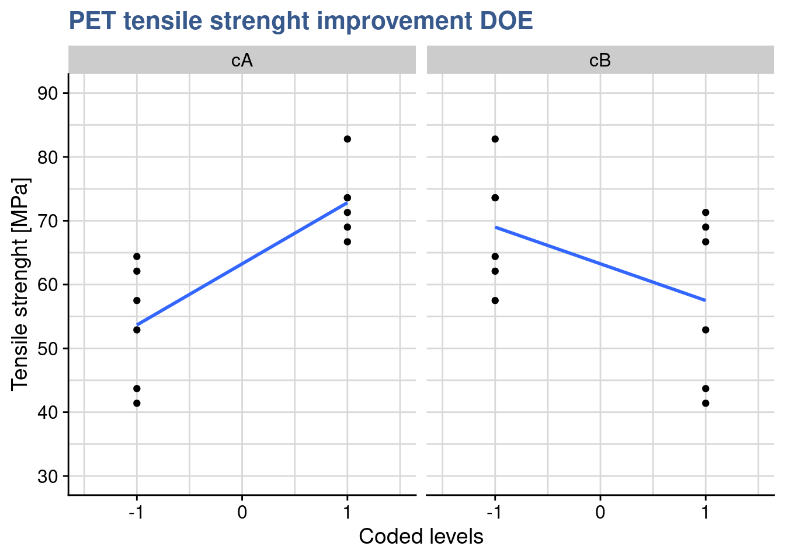
From the lm() summary she remembers that the intercept passes at 27.5 and she replorts now to putting the B factor at its maximum:
pet_num %>%
unclass() %>%
as_tibble() %>%
mutate(cA = coded(A), cB = coded(B)) %>%
filter(cB == 1) %>%
pivot_longer(
cols = c("cA", "cB"),
names_to = "variable",
values_to = "level") %>%
ggplot() +
geom_point(aes(x = level, y = tensile_strength)) +
geom_smooth(aes(x = level, y = tensile_strength),
method = "lm", se = FALSE, fullrange = TRUE) +
coord_cartesian(xlim = c(-1.5, 1.5), ylim = c(30, 90)) +
scale_y_continuous(n.breaks = 10) +
facet_wrap(vars(variable)) +
labs(
title = "PET tensile strenght improvement DOE",
y = "Tensile strenght [MPa]",
x = "Coded levels"
)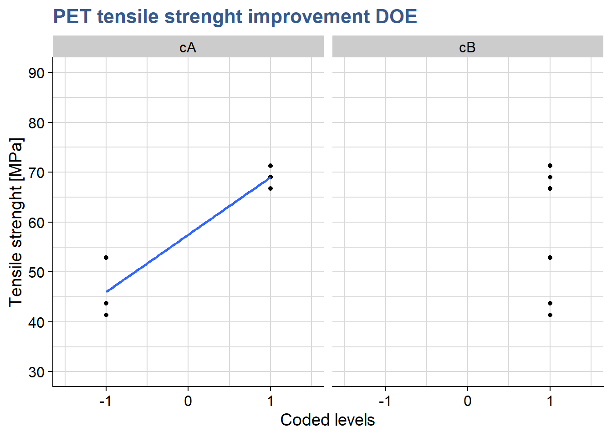
The plot confirms that the output of the prediction is 69 corresponding to the max level of A when B is also at the max. Mathematically she confirms this result by multiplying all the linear regression coefficients by the levels of the factors as : \(63.250 + 9.583 \times (+1) - 5.750 \times (+1) + 1.917 = 69\)
Interaction plots with SE
library(RcmdrMisc)par(mfrow = c(1,1), bty = "l")
plotMeans(response = pet_doe$tensile_strength,
factor1 = pet_doe$A,
xlab = "A: bi-axial orientation in production (yes/no)",
factor2 = pet_doe$B,
legend.lab = "B: nucleating agent (high/low)",
ylab = "Tensile Strenght [Mpa]",
error.bars = "se",
col = viridis::viridis(12)[4],
legend.pos = "bottomright",
main = "The PET clothing improvement plan")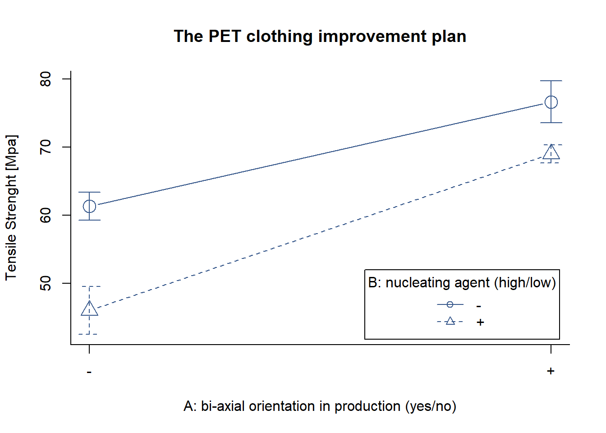
dev.off() null device
1 Now she want to get quickly an interaction plot but including error bars. Unfortunately the base R interaction.plot() doesn’t provide it and the ggplot2() made it to long. With a quick check on Stackoverflow she discovered this simple approach with the function plotMeans() from the package {RcmdrMisc} and she gets the plot dine with standard error as argument for the error.bars argument.
As expected she confirms that both treatments provide an visible effect on Tensile strenght and that there is no interaction between them.
Adjusted R-squared
Case study: lithium-ion battery charging time
The global transition to full electrical car is well underway and there’s a global trend in legislating towards the end of fossil fuel cars. The challenge of authonomy has been brought to acceptable levels with the extensive deployment of electric charging stations but engineering teams still face complex problems such as the charging time. At a pioneering manufacturer another DOE is underway to get it optimized.

battery_lm <- lm(
formula = charging_time ~ A * B * C,
data = battery_charging
)
summary(battery_lm)
Call:
lm.default(formula = charging_time ~ A * B * C, data = battery_charging)
Residuals:
Min 1Q Median 3Q Max
-2.595 -1.076 -0.450 0.965 4.155
Coefficients:
Estimate Std. Error t value Pr(>|t|)
(Intercept) 6.787 0.325 20.89 <2e-16 ***
A 0.940 0.325 2.89 0.0080 **
B -0.182 0.325 -0.56 0.5813
C 1.040 0.325 3.20 0.0038 **
A:B 0.163 0.325 0.50 0.6208
A:C -0.809 0.325 -2.49 0.0201 *
B:C -0.349 0.325 -1.07 0.2932
A:B:C 0.408 0.325 1.26 0.2214
---
Signif. codes: 0 '***' 0.001 '**' 0.01 '*' 0.05 '.' 0.1 ' ' 1
Residual standard error: 1.84 on 24 degrees of freedom
Multiple R-squared: 0.54, Adjusted R-squared: 0.405
F-statistic: 4.02 on 7 and 24 DF, p-value: 0.00481The R-squared was introduced in the linear models unit as a way to assess the quality of the model fit. A potential problem with this statistic is that it always increases as factors are added to the model, even if these factors are not significant. This can be overcomed by using the adjusted R-squared which is obtained by dividing the Sums of Squares by the degrees of freedom, and is adjusted for the size of the model, that is the number of factors. Both indicators are part of the summary() output of the lm() function applied on the charging_time dataset as we could just see in the previous chunk. Below we’re comparing both indicators.
A consulting company specialized in data science is supporting a global manufacturer of electrical car batteries to further optimize a lithium-ion battery charging time. The latest DOE consisted of 3 input factors as follows:
A - temperature (-1 = -10°C, +1 = 40°C)
B - voltage (-1 = 120V, +1 = 220V)
C - age (-1 = 10’000 cycles, +1 = 0 cycles)
Z - charging time [h]
The model can now be passed to the aov() function for an assessment of the significance of the different factors:
battery_aov <- aov(battery_lm)
summary(battery_aov) Df Sum Sq Mean Sq F value Pr(>F)
A 1 28.3 28.3 8.37 0.0080 **
B 1 1.1 1.1 0.31 0.5813
C 1 34.6 34.6 10.26 0.0038 **
A:B 1 0.8 0.8 0.25 0.6208
A:C 1 20.9 20.9 6.20 0.0201 *
B:C 1 3.9 3.9 1.15 0.2932
A:B:C 1 5.3 5.3 1.58 0.2214
Residuals 24 81.0 3.4
---
Signif. codes: 0 '***' 0.001 '**' 0.01 '*' 0.05 '.' 0.1 ' ' 1The main effects of temperature and age are significant as is their interaction. Voltage has no influence on the output. An updated model is prepared considering these observations and removing the factor B.
battery_reduced_lm <- lm(
formula = charging_time ~ A * C,
data = battery_charging
)
summary(battery_reduced_lm)
Call:
lm.default(formula = charging_time ~ A * C, data = battery_charging)
Residuals:
Min 1Q Median 3Q Max
-3.696 -1.062 -0.483 0.952 3.054
Coefficients:
Estimate Std. Error t value Pr(>|t|)
(Intercept) 6.787 0.321 21.16 <2e-16 ***
A 0.940 0.321 2.93 0.0067 **
C 1.040 0.321 3.24 0.0030 **
A:C -0.809 0.321 -2.52 0.0176 *
---
Signif. codes: 0 '***' 0.001 '**' 0.01 '*' 0.05 '.' 0.1 ' ' 1
Residual standard error: 1.81 on 28 degrees of freedom
Multiple R-squared: 0.476, Adjusted R-squared: 0.42
F-statistic: 8.49 on 3 and 28 DF, p-value: 0.000361Besides the base summary() function, R squared and adjusted R squared can also be easily retrieved with the glance function from the {broom} package. We’re extracting them here for the complete and for reduced model:
glance(battery_lm)[1:2] %>%
bind_rows(glance(battery_reduced_lm)[1:2],
.id = "model")# A tibble: 2 x 3
model r.squared adj.r.squared
<chr> <dbl> <dbl>
1 1 0.540 0.405
2 2 0.476 0.420Although R-squared has decreased the adjusted R-squared has slightly improved showing that removing the non significant terms has resulted in a better fit. The changes are small and further work is still required but the principle is clear that the model fit is improving and will better forecast the output for new data.
Coding inputs
natural2coded <- function(xA, lA, hA) {(xA - (lA + hA) / 2) / ((hA - lA) / 2)}# Converting natural value xA into coded value cA:
lA <- -10
hA <- 40
nA <- 22
cA <- natural2coded(nA, lA, hA)
cA[1] 0.28The consulting company proposed itself to provide a tool to predict the charging time for new batteries. They had been doing lots of the DOEs and based on the last one they’ve realised they believe to be in a position to calculate the response at a certainly specific level between the coded factor levels of \(\pm\) 1. To do that they needed to convert natural values into coded values. They’ve given as an example a calculation of the charging time for a temperature of which the natural value is nA = 22 [°C] which is between the natural levels of lA = -10 and hA = 40 [°C]. This temperature coded corresponds to a value of 0.28 °C as presented in the previous chunk. To be noted that the opposite conversion would look like:
coded2natural <- function(cA, lA, hA) {cA * ((hA - lA) / 2) + ((lA + hA)/2)} # Converting back the coded value cA into its natural value xA
lA <- -10
hA <- 40
nA <- coded2natural(cA, lA, hA)
nA[1] 22Coded prediction
battery_new <- tibble(A = cA, C = 1)
pA <- predict(battery_reduced_lm, battery_new)
pA 1
7.8634 They’ve choosen to do this prediction for a fixed level of C of 1, corresponding to a completely new battery (maximum of the factor C at of 0 cycles) and the predict() function with those values and the reduced model. We can visualize the outcome as follows:
battery_charging %>%
filter(C == 1) %>%
ggplot() +
# geom_point(aes(x = A, y = charging_time, color = as_factor(C))) +
geom_smooth(aes(x = A, y = charging_time), method = "lm", se = FALSE) +
geom_point(aes(x = cA, y = pA)) +
scale_y_continuous(n.breaks = 10) +
scale_color_discrete(guide = FALSE) +
theme(plot.title = ggtext::element_markdown()) +
geom_hline(yintercept = pA, linetype = 2) +
coord_cartesian(xlim = c(-1, 1)) +
scale_x_continuous(n.breaks = 5) +
scale_y_continuous(n.breaks = 20) +
labs(
title = "Lithium-ion battery charging DOE",
y = "Charging time [h]",
x = "A: temperature (-1 = -10°C, +1 = 40°C)",
subtitle = "Prediction with reduced model")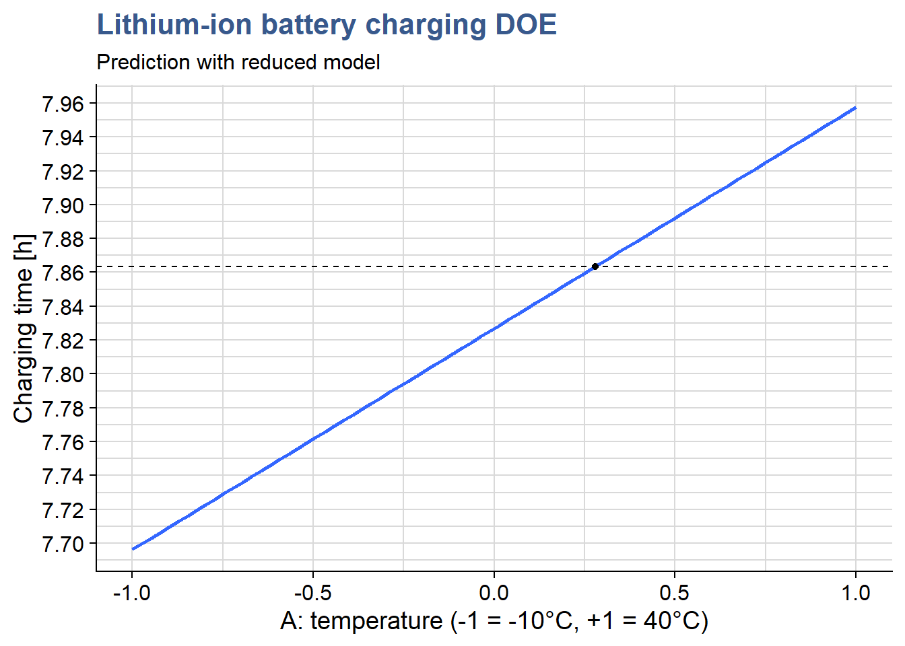
Perspective plot
library(rsm)persp(
battery_reduced_lm,
A ~ C,
bounds = list(A = c(-1,1), C = c(-1,1)),
col = viridis(12)[8],
theta = -40, phi = 20, r = 5,
zlab = "Charging Time [h]",
xlabs = c(
"A: Temperature",
"C: Age"),
main = "Lithium-ion battery\ncharging time DOE"
)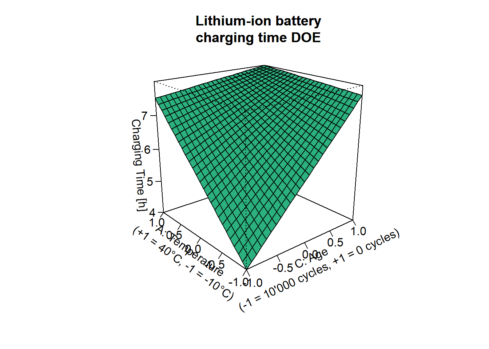
Here they went further introducing here response surface plots which is yet another way to visualize the experiment outputs as a function of the inputs. The’ve done this with the persp() function from the {rsm} package which provides an extremely fast rendering, easy parametrization and a readable output. To be noted that this function is an extension of the base R persp() consisting from the R point of view in an S3 method for the lm class. This allows to simply provide directly the lm object to the function to obtain the response surface.
Due to the interaction between factors A and C the surface is bent. This is exactly what we observe in the interactions plots of which the one below corresponds to slicing the surface at the min and the max of Power:
interaction.plot(x.factor = battery_charging$C,
trace.factor = battery_charging$A,
fun = mean,
response = battery_charging$charging_time,
legend = TRUE,
xlab = "C: Age \n(-1 = 10'000 cycles, +1 = 0 cycles)",
trace.label = "A: Temperature \n(+1 = 40°C, -1 = -10°C)",
lwd = 2, lty = c(2,1),
col = viridis(12)[8],
ylab = "Charging Time",
main = "Lithium-ion battery\ncharging time test")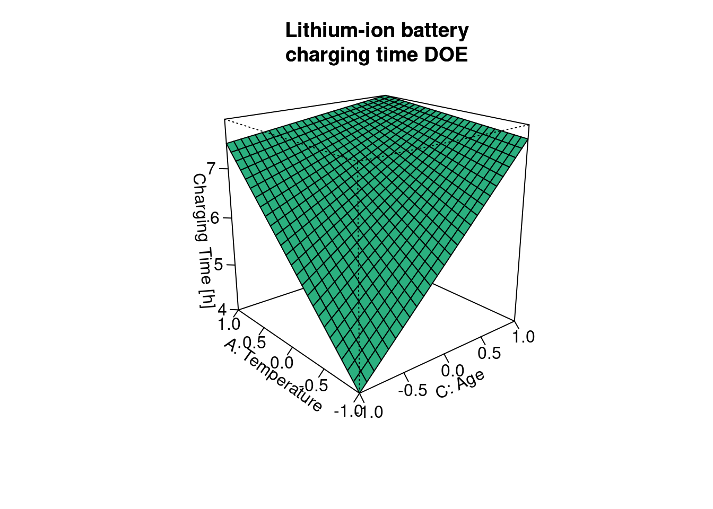
Just like in the surface plot we can see here in the interaction plot that the response of charging time on age is very different depending on the level of temperature. When temperature is at its max the charging time is almost independent of age but at the minumum of temperature the charging time depends a lot on the age. All this make a lot of sense to everyone involved but its good to confirm it with results and to get the details of how much these variations are numerically. As a reminder this is what is called an interaction between these two factors.
Single replicate
battery_sr_lm <- lm(
formula = charging_time ~ A * B * C * D,
data = battery_charging %>% filter(Replicate == 2))
summary(battery_sr_lm)
Call:
lm.default(formula = charging_time ~ A * B * C * D, data = battery_charging %>%
filter(Replicate == 2))
Residuals:
ALL 16 residuals are 0: no residual degrees of freedom!
Coefficients:
Estimate Std. Error t value Pr(>|t|)
(Intercept) 6.44e+00 NaN NaN NaN
A 1.76e+00 NaN NaN NaN
B -2.50e-02 NaN NaN NaN
C 6.75e-01 NaN NaN NaN
D 1.05e+00 NaN NaN NaN
A:B 7.50e-02 NaN NaN NaN
A:C -9.75e-01 NaN NaN NaN
B:C -3.12e-01 NaN NaN NaN
A:D 4.00e-01 NaN NaN NaN
B:D 4.13e-01 NaN NaN NaN
C:D 1.25e-02 NaN NaN NaN
A:B:C 4.12e-01 NaN NaN NaN
A:B:D -1.13e-01 NaN NaN NaN
A:C:D -2.63e-01 NaN NaN NaN
B:C:D 5.00e-02 NaN NaN NaN
A:B:C:D 6.94e-18 NaN NaN NaN
Residual standard error: NaN on 0 degrees of freedom
Multiple R-squared: 1, Adjusted R-squared: NaN
F-statistic: NaN on 15 and 0 DF, p-value: NAIn the R&D offices of the manufacturer of electrical car batteries there is some satisfaction with the report delivered by the data science consulting company. Although initially skeptical the head of battery engineering has finally acknowledged that there are several benefits coming from this work. Now, he makes a last moment request: he would like to know by thursday (after tomorrow) what is the effect of the terminals material. In his view this will for sure have a high impact on the final delivered cost of the assembled battery. Unfortunately data on terminals material was only captured in the 2nd replicate. We can check that in the original data for example in first two and last two rows. The variable coded as D is missing in the begining:
battery_charging[c(1,2,31:32),]# A tibble: 4 x 6
A B C D Replicate charging_time
<dbl> <dbl> <dbl> <dbl> <dbl> <dbl>
1 -1 -1 -1 -1 NA 3.5
2 1 -1 -1 -1 NA 6.69
3 -1 1 1 1 2 7
4 1 1 1 1 2 9.6 As a reminder below the DOE variables, including D are:
A - temperature (-1 = -10°C, +1 = 40°C)
B - voltage (-1 = 120V, +1 = 220V)
C - age (-1 = 10’000 cycles, +1 = 0 cycles)
D - terminal (-1 = lead based, +1 = zinc based)
Z - charging time [h]
As there is no time to collect new data, a specialist in DOEs from the consulting company suggests exploiting the the single replicate data using a graphical method - the normal probability plot - to identify the main effects that are important in the model. He demonstrates how to achieve this with the function qqPlot() from the {car} package:
Effects normal plot
library(car)battery_sr_effects <- battery_sr_lm$coefficients[2:16]
battery_sr_effects_names <- names((battery_sr_lm$coefficients)[2:16])
main_effects_plot <- qqPlot(
ylab = "Model effects",
battery_sr_effects,
envelope = 0.95,
id = list(
method = "y", n = 5, cex = 1, col = carPalette()[1], location = "lr"),
grid = FALSE,
col = "black",
col.lines = viridis::viridis(12)[5],
main = "Battery charging DOE\nNormal plot of effects"
)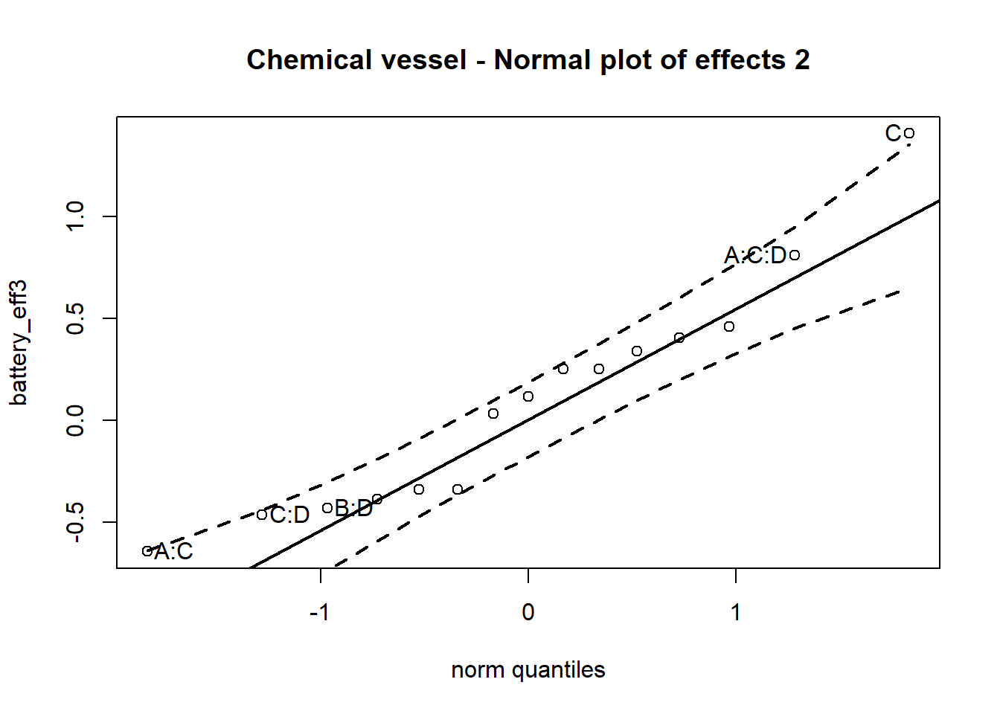
In plot we can see that the effects that have the highest influence on the output are the effects A - temperature and D - terminal and their interaction. Its seems the head of engineering had a good intuition. The next step is a confirmation of these observations with a calculation of the percentage contribution of each effect as follows:
Effects contribution table
battery_sr_lm_tidy <- battery_sr_lm %>%
tidy() %>%
filter(term != "(Intercept)") %>%
mutate(
effect_estimate = 2 * estimate)
battery_sr_aov <- aov(battery_sr_lm)
battery_sr_aov_tidy <- battery_sr_aov %>%
tidy() %>%
mutate(term, sumsq_total = sum(sumsq),
effect_contribution_perc = sumsq/sumsq_total*100)
main_effects_table <- battery_sr_lm_tidy %>%
left_join(battery_sr_aov_tidy, by = "term") %>%
select(term, estimate, effect_estimate, sumsq, effect_contribution_perc) %>%
arrange(desc(effect_contribution_perc))
main_effects_table %>%
head(5) %>%
kable()| term | estimate | effect_estimate | sumsq | effect_contribution_perc |
|---|---|---|---|---|
| A | 1.7625 | 3.525 | 49.7025 | 49.2799 |
| D | 1.0500 | 2.100 | 17.6400 | 17.4900 |
| A:C | -0.9750 | -1.950 | 15.2100 | 15.0807 |
| C | 0.6750 | 1.350 | 7.2900 | 7.2280 |
| B:D | 0.4125 | 0.825 | 2.7225 | 2.6993 |
We could see in the lm() output before that no statistics have been calculated for the effects in the model as there is only a single replicate.
Reduced model
battery_red_lm <- lm(
formula = charging_time ~ A + D + A:C,
data = battery_charging %>% filter(Replicate == 2))
summary(battery_red_lm)
Call:
lm.default(formula = charging_time ~ A + D + A:C, data = battery_charging %>%
filter(Replicate == 2))
Residuals:
Min 1Q Median 3Q Max
-2.450 -0.338 0.163 0.425 2.200
Coefficients:
Estimate Std. Error t value Pr(>|t|)
(Intercept) 6.438 0.309 20.85 8.6e-11 ***
A 1.763 0.309 5.71 9.8e-05 ***
D 1.050 0.309 3.40 0.0053 **
A:C -0.975 0.309 -3.16 0.0083 **
---
Signif. codes: 0 '***' 0.001 '**' 0.01 '*' 0.05 '.' 0.1 ' ' 1
Residual standard error: 1.24 on 12 degrees of freedom
Multiple R-squared: 0.819, Adjusted R-squared: 0.773
F-statistic: 18 on 3 and 12 DF, p-value: 9.63e-05Following theses analysis a new model has been built, including only the effects and interactions with highest contribution. We can now see that we’ve regained degrees of freedom and obtained a sort of hidden replication allowing to calculate statistics and error terms on the model. Checking the residuals the DOE specialist from the consulting company recommends to do another test now with proper replication but choosing only the variables of interest. These residuals show the limitations of this model deviating from normality above \(\pm\) 1 standard deviation and showing difference variance at different levels.
par(mfrow = c(2,3))
plot(battery_red_lm$residuals)
plot(battery_red_lm, which = 2)
plot(battery_red_lm, which = c(1, 3, 5))
plot(battery_red_lm, which = 4)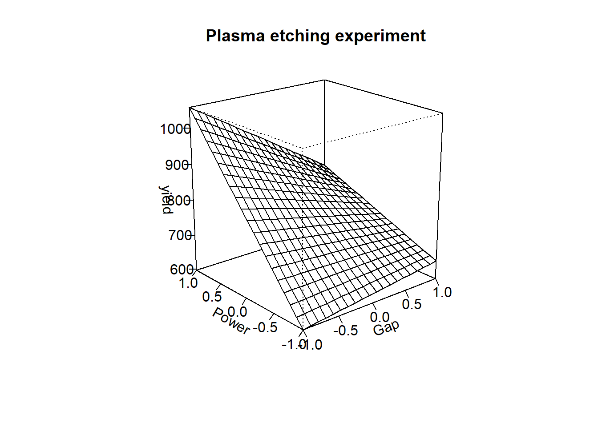
dev.off() null device
1 In any case from the linear model coefficients we can already see that the selection of terminal material has a significative effect which is of about 60% of the effect of the temperature (1’050/1’763).